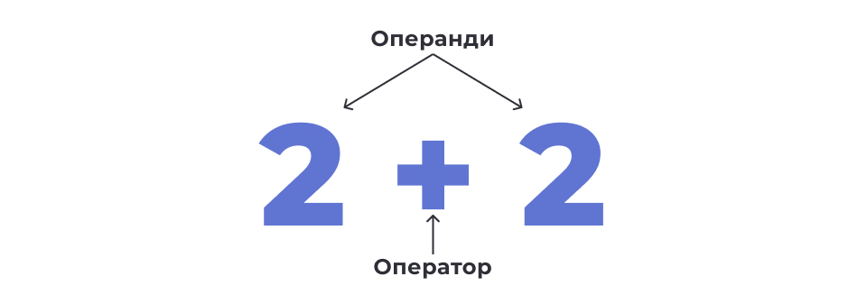
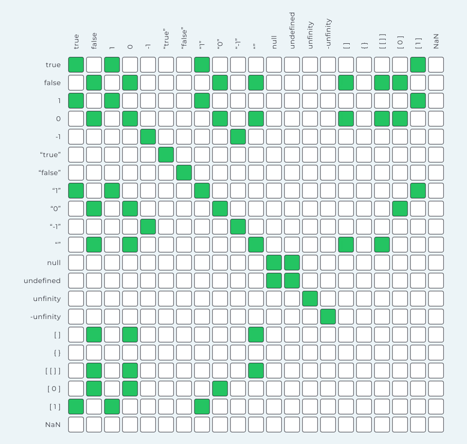
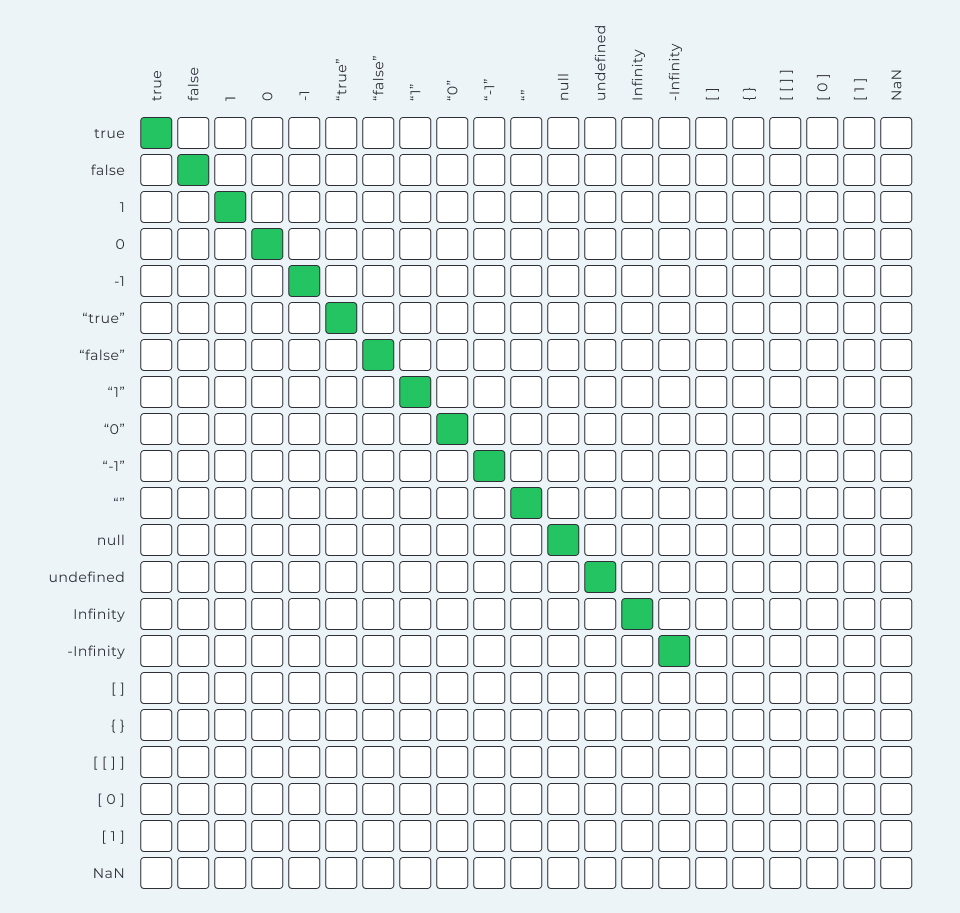
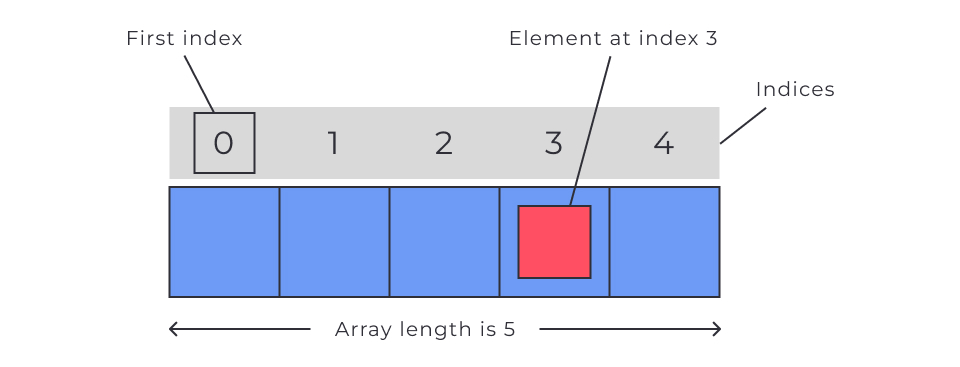

Мова JavaScript
JavaScript — високорівнева мова програмування, що підтримується всіма сучасними веббраузерами.
У Front-end розробці JavaScript використовується у зв'язці з HTML та CSS для забезпечення функціональності вебсторінки, такої як:
- нескладні обчислення;
- перевірка та маніпуляція даними, які було введено користувачем;
- зберігання інформації у браузері користувача;
- динамічна зміна HTML-документа;
- реакція на дії користувача;
- створення інтерактивних елементів: галерей, графіків тощо;
- взаємодія з бекендом.
Якщо JavaScript-код пишеться для виконання в браузері (Front-end), розробник не має інструментів і доступу до файлової або операційної системи з міркувань безпеки.
Також на сьогоднішній день, використовуючи JavaScript, можна створювати:
-
вебдодатки на фреймворках
React,Vue,Angularтощо; - бекенд програми на
Node.js; - мобільні додатки на
React Native; - десктоп програми за допомогою
Electron.
Інструкція (statement) — це пов'язаний набір слів і символів із синтаксису мови, які об'єднуються, щоб висловити одну ідею, тобто одну інструкцію для машини.
-
вебдодатки на фреймворках
React,Vue,Angularтощо; - бекенд програми на
Node.js; - мобільні додатки на
React Native; - десктоп програми за допомогою
Electron.
a = b * 2;
У JavaScript інструкції закінчуються ;.
-
aіb— змінні (як у рівнянні алгебри). Змінні — це сховища даних, які використовує програма. Вони складаються з ідентифікатора (імені) та пов'язаного з ним значення. -
2— просто число. Це називається значенням літералу (literal value), оскільки воно не зберігається у змінній. -
=і*— оператори, що виконують дії над значеннями та змінними.
Як працюватиме ця інструкція?
Уявимо, що змінна b зберігає будь-яке
число, наприклад 10. Тоді ця інструкція каже машині таке:
-
Піди знайди змінну з ідентифікатором
bі дізнайся, яке в неї зараз значення. -
Підстав значення змінної
b(наприклад 10) в інструкцію замістьb. -
Виконай операцію множення
10на2. -
Запиши результат обчислення виразу з правого боку у змінну
a.
Отже, значення змінної a дорівнюватиме
20. Ця інструкція виконується послідовно і є основою виконання дій у
програмі.
У людських мовах є речення, що виражають закінчену думку. Речення складаються із фраз.
Аналогічно, у мовах програмування є інструкції, що дають команду комп’ютеру. Інструкції складаються з менших частин — виразів.
Вираз (expression) — це посилання на змінну чи значення, або на набір змінних і значень у поєднанні з операторами.
У цьому прикладі інструкція містить 5 виразів. Кожна інструкція виділена квадратними дужками для візуалізації (це не синтаксис мови):
-
2— вираз значення літерала. Тут використовується числовий літерал, що представляє число 2 -
bтаa— вирази змінних. Вони вказують на необхідність використовувати значення зміннихbтаaвідповідно. Однак значення цих змінних будуть використані лише у випадку, якщо змінні стоять у правій частині виразу присвоювання -
b * 2— арифметичний вираз множення. Тут значення змінноїbмножиться на число2 -
a = b * 2— вираз присвоювання. У даному випадку він вказує на необхідність обчислення правої частини виразу й присвоювання результату зміннійa, що знаходиться в лівій частині виразу
Існують інші типи виразів: вирази виклику функцій, вирази порівняння тощо.
Літерал — це значення, яке вказується безпосередньо в коді програми та представляє певний тип даних.
- Числовий літерал — це число, записане в коді програми.
- Рядковий літерал — це послідовність символів, укладених у лапки.
Літерали використовуються, щоб задати початкові значення змінних та інших операцій, де потрібно конкретне значення.
// Числовий літерал
10
// Рядковий літерал
"JavaScript is awesome!"
Підключення скрипта
Для підключення скрипта JavaScript до HTML-сторінки можна використати
тег <script>. Існує кілька способів, як це можна
зробити:
Вбудований скрипт
Можна додати JavaScript-код прямо всередині тега
<script> всередині тега <head>:
<!DOCTYPE html>
<html>
<head>
<title>My HTML-page</title>
<script>
<!--Твій JavaScript-код тут-->
console.log("Hello, world");
</script>
</head>
<body>
<!-- Вміст сторінки -->
</body
</html>
Зовнішній скрипт
По-перше, треба створити окремий файл із розширенням .js,
що містить JavaScript-код. Потім під'єднати цей файл до HTML-сторінки за
допомогою тега <script>, вказавши шлях до файлу в атрибуті
src:
<!DOCTYPE html>
<html>
<head>
<title>My HTML-page</title>
<script src="my-script.js" defer></script>
</head>
<body>
<!-- Вміст сторінки -->
<body>
</html>
Тег <script> з атрибутом defer можна
вставити як у <head>, так і в
<body> — немає жодної різниці.
У цьому прикладі файл my-script.js містить JavaScript-код,
який буде виконано на сторінці.
Атрибут defer вказує браузеру, що скрипт повинен бути
виконаний після того, як HTML-документ буде повністю завантажений. Це
дозволяє уникнути затримки відображення вмісту сторінки.
У багатьох випадках краще використовувати зовнішні скрипти, щоб зробити код більш читабельним, зручним для підтримки та перевикористання.
Зверни увагу, що під час написання коду в редакторі VSCode і встановленому в ньому розширенні Live Server, вебсторінка буде перезавантажуватися щоразу, коли зберігаються нові зміни у файлі скрипта.Суворий режим
Суворий режим (англ. strict mode) у JavaScript — це спеціальний режим виконання коду, який дає змогу переводити скрипт у режим повної відповідності сучасному стандарту. Це запобігає певним помилкам, наприклад, використанню небезпечних і застарілих конструкцій, що робить код надійнішим та дозволяє легше його підтримувати.
Щоб увімкнути суворий режим, потрібно додати директиву
'use strict'; на початок скрипта. Наприклад:
'use strict'; // Код у суворому режимі
Рекомендується завжди використовувати суворий режим у своїх проєктах, щоб уникнути непередбачуваних ситуацій і проблем у коді.Виведення даних
Розробнику потрібно перевіряти правильність роботи програми в певний
момент часу та виводити інформацію в певному місці коду. Для цього є
консоль в інструментах розробника браузера на вкладці
Console.

Наступні комбінації клавіш відкривають інструменти розробника на вкладці
Console:
-
Windows і Linux
—
Ctrl+Shift+J; -
MacOS
—
Command+Option+J.
Метод console.log()
Щоб вивести дані в консоль розробника використовується метод
console.log().
console.log(value);
Значення value, яке вказано в круглих дужках, буде виведено
в консоль розробника при виконанні програми.
console.log("JavaScript is awesome!");
console.log(10);
При виконанні цього коду в консоль розробника будуть послідовно виведені рядок і число.

Змінні та типи даних
Оголошення зміннихЗмінна — це контейнер, який використовується для зберігання даних.
Змінна складається з:
- ідентифікатора (унікального імені);
- області пам’яті, де зберігається її значення.
Розглянемо приклади оголошення змінних.
const age = 20;
const username = "Mango";
-
Оголошення змінної починається з ключового слова (у прикладі:
const). У сучасному синтаксисі JavaScript змінні краще оголошувати за допомогою ключових слівconstіlet. Створення змінної без ключового слова може призвести до помилки. -
Після ключового слова, через пробіл, вказується ім'я змінної (у
прикладі:
ageтаusername). -
Щоб присвоїти змінній значення, використовують оператор присвоєння
= -
Інструкція оголошення змінної закінчується крапкою з комою
;. - Для кращої читабельності кожне нове оголошення змінної рекомендується розпочинати з нового рядка.
Після оголошення змінної до неї можна звернутися за допомогою її імені далі у коді. Це необхідно для виконання операцій зі значенням змінної. Наприклад, для виведення її значення в консоль інструментів розробника.
const age = 20;
console.log(age); // 20
const username = "Mango";
console.log(username); // "Mango"
Для перевизначення значення раніше оголошеної змінної треба після імені
такої змінної поставити літерал присвоєння
= і після нього записати нове значення.
Наприклад:
let username = "Mango";
username = "Poly";
Для оголошення
змінної, якій згодом можна задати нове значення,
використовується ключове слово let.
let username = "Mango";
console.log(username); // "Mango"
username = "Poly";
console.log(username); // "Poly"
Якщо змінна оголошена як const,
перевизначити її значення неможливо. При спробі задати
їй нове значення буде помилка, яку можна побачити в інструментах
розробника.
const username = "Mango";
console.log(username); // "Mango"
// ❌ Неправильно, буде помилка
username = "Poly"; // TypeError: Assignment to constant variable.
Створення змінної без ключового
слова let або const у
режимі ”strict mode” призведе до помилки.
Змінним, оголошеним через let, необов'язково відразу
задавати значення. У разі оголошення змінної без значення, змінна
ініціалізується зі спеціальним значенням
undefined (англ. не визначено).
let username;
console.log(username); // undefined
username = "Mango";
console.log(username); // "Mango"
Як вибрати між const і let
Основна відмінність між const і let полягає в
можливості перевизначення значення змінної після її оголошення.
Ключове слово const запобігає перевизначенню значення для
змінної.
Ключове слово let дозволяє змінювати значення змінної після
її оголошення.
Більшість змінних не вимагають повторного надання значення. Отже,
рекомендовано використовувати const за замовчуванням для
оголошення більшості змінних. Це сприяє створенню коду, який легко
зрозуміти і підтримувати, адже значення змінних не перевизначаються.
// Якщо не треба змінювати значення
const username = "Mango";
console.log(username);
Якщо тобі потрібно оновлювати лічильник або зберігати тимчасові значення
— тобто потрібно змінювати значення змінної під час виконання скрипту,
let буде кращим вибором.
// Якщо треба змінювати значення
let username = "Mango";
console.log(username);
username = "Poly";
console.log(username);
Правило використання const та let може бути таким: — Використовуй const за замовчуванням для оголошення змінних. — Використовуй let, якщо потрібно змінювати значення змінної під час виконання скрипту. Це правило допоможе писати більш надійний, зрозумілий код, який легко підтримувати.Найменування
Є декілька правил, як обрати ім’я для змінної. Ці правила слід враховувати, щоб імена були зрозумілими і відповідали загальноприйнятим стандартам.
- Імена змінних можуть складатися з літер (a-z, A-Z), цифр (0-9), символів підкреслення (_) та знака долара ($).
- Першим символом в імені змінної має бути літера латиниці, символ підкреслення або знак долара. Інші символи можуть бути будь-якими з допустимих.
-
Імена змінних чутливі до регістру, тобто змінні
user,usErтаUserвважаються різними змінними.
Хороше ім'я змінної має бути зрозумілим та описувати призначення чи вміст змінної.
// ❌ Погано
chislo
korzina_tovariv
profil_koristuvacha
// ✅ Добре
number
cart
userProfile
Гарною практикою є використання camelCase нотації для
іменування змінних. При camelCase нотації ****перше слово пишеться
малими літерами, а кожне наступне починається з великої літери,
наприклад: user, getUserData,
isActive, activeGuestCount. Не забувай про
чутливість імен змінних до регістру. Змінні isActive та
IsActive — це різні змінні.
Варто пам'ятати, що існують зарезервовані ключові слова. Ці слова мають спеціальне значення та використовуються для певних конструкцій у мові. Не можна використовувати ключові слова як імена змінних, оскільки це спричинить помилки в коді.
 Типові помилки
Типові помилки
При виконанні коду можуть виникати помилки. Помилки відображаються в консолі інструментів розробника браузера.
Ці помилки зазвичай містять описові повідомлення, які вказують на місце та причину помилки, допомагаючи зрозуміти, чому код не працює.

Використання консолі інструментів розробника та читання повідомлень про помилки є важливими інструментами для налагодження та покращення якості твого коду. Це допомагає краще зрозуміти причину виникнення проблем і вжити відповідних заходів для їх виправлення.
Неправильне ім’я змінної
Уявімо, що є помилка в імені змінної. У коді ми намагаємось отримати
значення змінної user, яку ми не оголошували, оскільки
оголошували ми username.
Помилка буде відображена в консолі з відповідним описом проблеми. Це дозволяє тобі швидко виявити та виправити помилки у своєму коді.
const username = "Mango";
console.log(user); // ReferenceError: user is not defined
 Звернення до змінної до її оголошення
Звернення до змінної до її оголошення
Розробник звертається до змінної до того, як змінна була оголошена через
const або let. У цьому разі з’явиться помилка
про те, що неможливо отримати доступ до змінної до її ініціалізації.
// ❌ Неправильно, буде помилка
console.log(age); // ReferenceError: age is not defined
// Оголошення змінної age
let age = 20;
// ✅ Правильно, звертаємося після оголошення
age = 25;
console.log(age); // 25

Перевизначення значення для змінної оголошеної через const
При спробі перевизначити значення const змінної буде
помилка про те, що неможливо змінити значення для такої змінної.
.png) Типи даних
Типи даних
Примітивні типи даних використовуються для зберігання та обробки різних видів інформації у програмі. Вони відіграють важливу роль у виконанні арифметичних операцій, порівнянь та логічних перевірок. JavaScript змінна не обмежена певним типом даних, тому може зберігати значення різних типів.
Number
Числа (Number) можуть бути позитивними чи негативними, цілими або дробовими. Ціла та дробова частини числа розділяються крапкою.
const age = 20;
const salary = 3710.84;
Зверни увагу, що якщо їх розділити комою, то буде помилка.
String
Рядок (String) є послідовністю символів, вкладених в одинарні
'' або подвійні лапки "".
const username = 'Mango995';
const description = "JavaScript is awesome!";
Boolean
Логічний тип даних (Boolean) має лише два значення: true і
false.
true— це логічне значення;-
"
true" — це рядок, що містить слово true.
Він використовується для виконання логічних операцій та перевірок умов. Наприклад, на запитання "чи ввімкнене світло в кімнаті?" можна відповісти "так" (true) або "ні" (false).
const isModalOpen = true;
const isLoggedIn = false;
Зверни увагу, що імена змінних, що містять логічні значення, звучать як питання, на яке можна відповісти “так” чи “ні”.
Спеціальні значення
У JavaScript існують два спеціальні значення: null і
undefined. Обидва означають відсутність значення.
null явно вказує на відсутність значення та часто
використовується розробниками для позначення порожнього значення. Це
значення має бути явно присвоєно змінній, щоб вказати, що змінна не
містить ніяких дійсних даних.
let value = null;
console.log(value); // null
Значення undefined автоматично присвоюється змінній, якщо:
- змінній було явно задано значення
undefined; - змінна була оголошена, але ще не була ініціалізована значенням.
Значення undefined вказує на невизначеність значення
змінної, тобто каже нам, що значення на даний момент невідоме чи
невизначене.
let value;
console.log(value); // undefined
Хоча обидва значенняnullіundefinedпозначають відсутність значення, вони мають трохи різні семантики використання. — null використовується для явної вказівки порожнього значення (точно відомо, що значення немає). — undefined вказує на невизначеність значення змінної.
Оператор typeof
Оператор typeof використовується для визначення типу даних
значення або виразу.
typeof operand
Замість operand ти вказуєш змінну, літерал або вираз, тип
якого ти хочеш визначити. Результатом оператора typeof буде
рядок, який вказує тип даних.
const quantity = 17;
console.log(typeof quantity); // виведе "number"
const message = "JavaScript is awesome!";
console.log(typeof message); // виведе "string"
const isSidebarOpen = false;
console.log(typeof isSidebarOpen); // виведе "boolean"
let username;
console.log(typeof username); // виведе "undefined"
let status = null;
console.log(typeof status); // виведе "object"
Зверни увагу на перевірку типу значення null. Важливо
розуміти, що null насправді є примітивним значенням, а не
об'єктом.
Коли ми використовуємо оператор typeof для перевірки типу
значення null, він повертає рядок object. Це може здатися дивним, оскільки null —
це фактично відсутність значення, а не об'єкт. Про це часто питають на
співбесідах.
Причина цього полягає в тому, що в ранніх версіях JavaScript
null було розглянуто як спеціальний випадок об’єкта. Це
була помилка в реалізації мови, збережена для забезпечення зворотної
сумісності з існуючим кодом. Тому коли
typeof застосовується до null, він повертає
object, щоб зберегти цю сумісність.
У JavaScript доступні різноманітні математичні оператори, які дозволяють виконувати арифметичні обчислення.
Працюючи з цими операторами, необхідно враховувати правила порядку виконання операцій. Ці правила аналогічні тим, які ми вивчали у шкільній алгебрі: спершу дії в дужках, потім степені й корені, потім множення та ділення тощо.
Результатом операцій є значення, яке можна використовувати далі у виразах або зберегти у змінних.
Оператор (+) використовується для складання двох чисел.
const x = 8;
const y = 5;
console.log(x + y); // 13
Оператор (-) використовується для віднімання одного числа
від іншого.
const x = 8;
const y = 5;
console.log(x - y); // 3
Оператор (*) використовується для множення двох чисел.
const x = 8;
const y = 5;
console.log(x * y); // 40
Оператор (/) використовується для ділення одного числа на
інше.
const x = 8;
const y = 5;
console.log(x / y); // 1.6
Оператор (%) повертає остачу від ділення одного числа на
інше.
const x = 8;
const y = 5;
console.log(x % y); // 3
Оператор (**) використовується для піднесення числа до
степеня.
const x = 8;
const y = 5;
console.log(x ** y); // 32768
Для всіх арифметичних операторів є еквівалентні комбіновані оператори. Вони дозволяють більш компактно виконувати арифметичні операції та одночасно оновлювати значення змінної, виходячи з її попереднього значення.
Ось список арифметичних операторів та їх комбінованих еквівалентів:
-
Додавання:
+=. Приклад:x += yеквівалентноx = x + y
-
Віднімання:
-=. Приклад:x -= yеквівалентноx = x - y
-
Множення:
*=. Приклад:x *= yеквівалентноx = x * y
-
Ділення:
/=. Приклад:x /= yеквівалентноx = x / y
-
Остача від ділення:
%=. Приклад:x %= yеквівалентноx = x % y
Давай розглянемо приклад оновлення віку користувача після дня
народження, збільшуючи значення змінної age на одиницю.
let age = 25;
age = age + 1;
console.log(age); // 26
Спочатку виконується додавання у правій частині виразу присвоєння.
Складається поточне значення змінної age, яке дорівнює
25, та 1. Результат: 26. Потім
цей результат присвоюється як нове значення змінної age.
Однак, ми можемо покращити цей код, використовуючи комбінований оператор
присвоєння з додаванням (+=).
let age = 25;
age += 1;
console.log(age); // 26
Рядки
Конкатенація рядків
Якщо застосувати оператор + до рядка та будь-якого іншого
типу даних, результатом буде новий рядок, що містить об'єднання вихідних
значень. Це називається конкатенація (склеювання).
const message = "Mango " + "is" + " happy";
console.log(message); // "Mango is happy"
Зверни увагу! Рядки "Mango " і " happy" містять пробіли, щоб текст повідомлення був читабельним.
Під час конкатенації можна використовувати значення змінних, щоб складати рядки з динамічними значеннями. Для цього необхідно вказати ім'я змінної, у це місце буде підставлено її значення.
const age = 24;
const message = "Poly is " + age + " years old!";
Під час конкатенації будь-який тип даних буде приведено до рядка та поєднано з іншим рядком.
console.log("Mango" + 55); // "Mango55"
console.log("Mango" + true); // "Mangotrue"
Проте порядок операндів має значення. Перетворення типів відбувається лише в момент операції додавання з рядком. До цього моменту застосовуються нормальні правила математики.
console.log(1 + "2"); // "12"
console.log(1 + "2" + 4); // "124"
console.log(1 + 2 + "4"); // "34"
В останньому прикладі спочатку виконується математичне додавання для
перших двох чисел 1 і 2, потім число
3 перетворюється на рядок "3" і поєднується з
рядком "4".
Перетворення типів у JavaScript — це процес зміни значення одного типу даних на інший тип даних. Перетворення типів може відбуватися в різних ситуаціях, наприклад, під час виконання арифметичних операцій з різними типами даних або порівняння значень. У JavaScript існують два типи перетворення: явне та неявне.
Явне перетворення типів
Явне перетворення типів виконується програмістом і використовується за
потребою. Для перетворення будь-якого значення на рядок можна
використовувати вбудовану функцію String(), яка повертає
результат у вигляді рядка.
console.log(String(5)); // "5"
console.log(String(true)); // "true"
console.log(String(false)); // "false"
console.log(String(null)); // "null"
console.log(String(undefined)); // "undefined"
Неявне перетворення типів
Неявне перетворення типів відбувається автоматично під час виконання
операцій або обчислень. Наприклад, якщо виконується операція додавання
(+) між рядком та іншим типом даних, JavaScript автоматично
перетворює значення операнда на рядок і виконує конкатенацію рядків.
console.log("5" + 3); // "53"
console.log("5" + true); // "5true"
console.log("5" + false); // "5false"
console.log("5" + null); // "5null"
console.log("5" + undefined); // "5undefined"
Неявне перетворення — це зручний вбудований механізм JavaScript, але іноді може викликати несподівані результати або помилки. Тому важливо бути уважним при виконанні операцій з різними типами даних і вчитися контролювати та бачити перетворення типів у коді своїх програм.
Шаблонні рядкиШаблонні рядки — це синтаксис, який полегшує об'єднання статичного тексту з динамічним (тобто текстом, що містить змінні, обчислення тощо). Шаблонні рядки дозволяють уникати користування заплутаною конкатенацією та роблять код більш читабельним.
Синтаксис шаблонного рядка
Шаблонні рядки огортаються зворотними лапками (англ. backticks)
(``)
Увага!
Код не працюватиме, якщо огорнути шаблонні рядки звичайними одинарними або подвійними лапками.
Для того щоб додати зворотні лапки ``, перейди в англійську
розкладку та натисни
- клавішу
~(див. 1-3 нижче)
або
- поєднання клавіш (див. 4 нижче)
Шаблонні рядки дозволяють підставляти значення змінних безпосередньо
всередині рядка за допомогою синтаксису інтерполяції
${змінна}.
const guestName = "Mango";
const roomNumber = 207;
const greeting = `Welcome ${guestName}, your room number is ${roomNumber}!`;
console.log(greeting); // "Welcome Mango, your room number is 207!"
У прикладі вище ми використали інтерполяцію (конструкцію
${}) для того, щоб підставити значення змінних
guestName та roomNumber прямо в текст рядка.
Під час формування цього рядка значення змінних автоматично
підставляться в місцях, де є відповідна інтерполяція.
Код з конкатенацією, де
- "Welcome " ", your room number is " та "!" — це статичний текст
-
guestNameтаroomNumber— імена змінних.
const guestName = "Mango";
const roomNumber = 207;
const greeting =
"Welcome " + guestName + ", your room number is " + roomNumber + "!";
console.log(greeting); // "Welcome Mango, your room number is 207!"
Код, де значення цих змінних підставляються у шаблонний рядок.
const guestName = "Mango";
const roomNumber = 207;
const greeting = `Welcome ${guestName}, your room number is ${roomNumber}!`;
console.log(greeting); // "Welcome Mango, your room number is 207!"
Код шаблонних рядків є більш читабельним.
Довжина рядкаВластивості — це описові характеристики сутності.
Для опису людини часто використовують такі властивості, як зріст, вага або колір очей.
Для опису даних також використовуються властивості.
Для доступу до властивості (property) сутності
(objectName) використовується синтаксис із крапкою:
сутність.властивість
У програмуванні, наприклад, рядок має властивість length,
яка повертає довжину рядка.
Довжина рядка визначається кількістю символів у ньому. Щоб дізнатися
довжину рядка, використовується вбудована властивість
length. Щоб отримати значення цієї властивості, необхідно
звернутися до неї через крапку після імені змінної чи рядкового
літералу.
Наприклад, щоб отримати довжину рядка, ми можемо використовувати
властивість length таким чином:
const productName = "Repair droid";
// Якщо у змінній зберігається рядок
console.log(productName.length); // 12
// Якщо рядковий літерал
console.log("Repair droid".length); // 12
Використання властивості length дозволяє легко визначити
довжину будь-якого рядка та використовувати цю інформацію для виконання
різних операцій і перевірок.
Рядки — це набори символів, де кожен символ має свій порядковий номер (індекс). Індексація елементів рядка починається з нуля. Перший символ має індекс 0, другий — індекс 1, третій — 2 і так далі.

Наприклад, у рядку "JavaScript" буква J стоїть
на позиції з індексом 0.
Буква t йде під індексом 9.
Загальна довжина рядка "JavaScript" дорівнює
10, тобто індекс останнього елемента рядка завжди на
одиницю менше його довжини.
Для доступу до певного символу рядка ми використовуємо синтаксис
квадратних дужок, де вказуємо індекс потрібного символу:
string[index], тобто рядок[індекс].
const product = "Repair droid";
console.log(product[0]); // 'R'
console.log(product[5]); // 'r'
console.log(product[11]); // 'd'
Отримання останнього символу рядка можливе за його індексом
string[lastIndex]. Щоб знайти індекс останнього символу
рядка, треба від довжини цього рядка відняти одиницю
string.length - 1
const product = "Repair droid";
const lastElementIndex = product.length - 1;
console.log(product[lastElementIndex]); // 'd'
Для доступу до останнього символу рядка без створення проміжної змінної
ми можемо вставити вираз (product.length - 1) безпосередньо
у квадратні дужки при зверненні до елемента.
const product = "Repair droid";
console.log(product[product.length - 1]); // 'd'
Коли рядок створюється, він зберігає своє значення і стає незмінним. Це означає, що не можна замінити окремі символи всередині рядка.
Уяви, що маємо рядок "Droid". Ми не можемо змінити окремий символ у цьому рядку, наприклад, замінити 'o' на 'O'. Спроба надання нового значення елементу рядка не призведе до зміни вихідного рядка.
let product = "Droid";
console.log(product); // "Droid"
// Це не має жодного ефекту
product[2] = "O";
console.log(product); // "Droid"
Натомість ми повинні створити новий рядок і присвоїти його змінній замість старого рядка.
Розгляньмо приклад, де змінено написання о —> О в рядку
“Droid”.
let product = "Droid";
console.log(product); // "Droid"
product = "DrOid";
console.log(product); // "DrOid"
Ця властивість незмінності рядків у JavaScript має важливе значення для забезпечення надійності та запобігання випадковим змінам усередині рядків.
Оператори порівняння
Оператори порівняння використовуються для порівняння двох значень і
повертають булеве значення (true або false)
залежно від результату порівняння.
Ось деякі основні оператори порівняння:
-
Оператор
>(більше) — повертаєtrue, якщо лівий операнд більше правого. В іншому разі повертаєfalse.
-
Оператор
<(менше) — повертаєtrue, якщо лівий операнд менше правого. В іншому разі повертаєfalse.
-
Оператор
>=(більше або дорівнює) — повертаєtrue, якщо лівий операнд більше або дорівнює правому. Якщо навпаки, повертаєfalse.
-
Оператор
<=(менше або дорівнює) — повертаєtrue, якщо лівий операнд менше або дорівнює правому. Якщо навпаки, повертаєfalse.
Давай розглянемо приклади використання цих операторів:
const a = 2;
const b = 5;
console.log(a > b); // false
console.log(b > a); // true
console.log(a >= b); // false
console.log(b >= a); // true
console.log(a < b); // true
console.log(b < a); // false
console.log(a <= b); // true
console.log(b <= a); // false
Основний принцип використання операторів порівняння полягає в тому, щоб
порівнювати значення та отримувати булевий результат. Булевий результат
(результат у вигляді true або false) дозволяє
приймати певні рішення та контролювати поведінку програми відповідно до
умов.
Оператори порівняння часто використовуються в умовних виразах або циклах, для перевірки умов та виконання певних дій на основі результатів порівняння. Наприклад, користувачі, старші за 18 років, отримують доступ до певної групи товарів.
Оператори рівностіУ JavaScript існують оператори рівності, які дозволяють порівнювати значення та визначати їхню рівність або нерівність.
Оператори несуворої рівності:
-
Оператор
==(дорівнює) — порівнює два значення на рівність і повертаєtrue, якщо значення операндів рівні. Якщо навпаки, повертаєfalse
-
Оператор
!=(не дорівнює) — порівнює два значення на нерівність і повертаєtrue, якщо значення операндів не рівні. Якщо навпаки, повертаєfalse
console.log(5 == 5); // true
console.log(5 == 3); // false
console.log(5 != 3); // true
console.log(5 != 5); // false
Але є одна проблема.
Оператори несуворої рівності можуть приводити значення до різних типів, в залежності від контексту порівняння. Це може призвести до неочікуваних результатів, тому багато розробників намагаються уникати їх використання.
// Погано, бо виконується неявне приведення рядків і булевого значення до числа
console.log(5 == "5"); // true
console.log(5 != "5"); // false
console.log(1 == true); // true
console.log(1 != true); // false
Розглянемо ці приклади детальніше.
Вираз 5 == "5" поверне true, хоча одне зі
значень є числом, а інше — рядком. Рядок "5" буде
приведений до числа 5, і порівняння виглядає як
5 == 5. Аналогічно, вираз 1 == true поверне
true, бо булеве значення true приводиться до
числа 1.
На наступній ілюстрації показано таблицю порівняння значень, із використанням операторів несуворої рівності.
Неявне перетворення типів може призводити до помилок, особливо в розробників-початківців. Для уникнення таких проблем рекомендується використовувати оператори суворої рівності, які не виконують перетворення типів операндів.
-
Оператор
===(сувора рівність) — порівнює два значення на рівність, повертаєtrue, якщо значення операндів рівні та мають однаковий тип даних. В іншому випадку, повертаєfalse
-
Оператор
!==(сувора нерівність) — порівнює два значення на нерівність, повертаєtrue, якщо значення операндів не рівні або мають різні типи даних. В іншому випадку, повертаєfalse
// Добре, приведення типів не виконується
console.log(5 === 5); // true
console.log(5 === "5"); // false
console.log(5 !== "5"); // true
console.log(5 !== 5); // false
console.log(1 === true); // false
console.log(1 !== true); // true
На відміну від несуворих операторів, вирази 5 === "5" і
1 === true повернуть false, тому що операнди
мають різні типи.
На наступній ілюстрації показано таблицю порівняння значень із використанням операторів суворої рівності. Усі операнди дорівнюють лише самі собі. Перед порівнянням нічого не перетворюється на інший тип.
 Перетворення типів: числаУ деяких операціях виконується явне або неявне перетворення значень операндів до числа.
Для явного перетворення будь-якого значення в число можна
використовувати вбудовану функцію Number(), яка повертає
результат у вигляді числа.
console.log(Number("5")); // 5
console.log(Number(true)); // 1
console.log(Number(false)); // 0
console.log(Number(null)); // 0
При перетворенні до числа:
trueзавжди приводиться до1;-
false,nullі""завжди приводяться до0.
Якщо неможливо привести значення до числа, результатом перетворення буде
спеціальне значення NaN (Not a Number). Ось кілька
прикладів, коли результатом перетворення буде NaN.
console.log(Number(undefined)); // NaN
console.log(Number("Jacob")); // NaN
console.log(Number("25px")); // NaN
Арифметичні операції (+, -,
*, /) виконують неявне перетворення типів.
console.log("5" * 2); // 10
console.log("10" - 5); // 5
console.log(5 + true); // 6
console.log(5 - true); // 4
- Якщо у виразі присутній хоча б один із операндів з типом рядка, то обидва операнди приводяться до чисел. Це відбувається у всіх арифметичних операціях, окрім додавання. Пам’ятай, що + біля рядкових операндів викликає їх з'єднання (конкатинацію).
- Для всіх інших типів операндів та операцій виконується перетворення операндів до числа.
У разі використання операторів порівняння (<, >, <=, >=) також виконується неявне перетворення типів. Якщо операнди різних
типів, то перед порівнянням вони приводяться до числа.
console.log("10" > 5); // true
console.log(10 > "5"); // true
console.log(5 > true); // true
console.log(5 < true); // false
console.log("5" < true); // false
Метод Number.parseInt()
Метод Number.parseInt() приймає 2 аргументи:
- Рядок. Якщо аргумент не є рядком, то він буде спочатку перетворений у рядок
- Система числення, до якої відноситься рядок (не обов’язковий аргумент, за замовчуванням десяткова система). Наприклад, для десяткової системи буде 10, для шістнадцяткової - 16 тощо..
Метод аналізує рядок зліва направо, видаляючи пробіли на початку і перетворюючи допустимі символи у число до тих пір, поки не зіткнеться з першим недопустимим символом. Після цього аналіз припиняється, і вже перетворене ціле число повертається.
console.log(Number.parseInt("5")); // 5
console.log(Number.parseInt("5.5")); // 5
console.log(Number.parseInt("5cm")); // 5
console.log(Number.parseInt("12qwe74")); // 12
console.log(Number.parseInt("12.46qwe79")); // 12
console.log(Number.parseInt("cm5")); // NaN
console.log(Number.parseInt("")); // NaN
console.log(Number.parseInt("qweqwe")); // NaN
Якщо перші символи рядка не можуть бути перетворені на число, або рядок
порожній чи відсутній, результатом буде значення NaN (Not a
Number).
Метод Number.parseFloat()
Метод Number.parseFloat() аналогічний
Number.parseInt() з однієї відмінністю: перетворює рядок на
число з плаваючою крапкою.
console.log(Number.parseFloat("5")); // 5
console.log(Number.parseFloat("5.5")); // 5.5
console.log(Number.parseFloat("3.14")); // 3.14
console.log(Number.parseFloat("5cm")); // 5
console.log(Number.parseFloat("5.5cm")); // 5.5
console.log(Number.parseFloat("12qwe74")); // 12
console.log(Number.parseFloat("12.46qwe79")); // 12.46
console.log(Number.parseFloat("cm5")); // NaN
console.log(Number.parseFloat("")); // NaN
console.log(Number.parseFloat("qweqwe")); // NaN
Якщо перші символи рядка не можуть бути перетворені на число, або рядок
порожній чи відсутній, результатом буде значення
NaN
(Not a Number).
Клас Math є вбудованим класом JavaScript. Цей клас надає
набір методів для виконання математичних операцій та роботи з числами.
Ось кілька найбільш корисних методів, які надає клас Math:
Math.floor(num): повертає найближче ціле число, яке є
меншим або дорівнює вказаному числу num. Наприклад:
console.log(Math.floor(1.3)); // 1
console.log(Math.floor(1.7)); // 1
Math.ceil(num): повертає найближче ціле число, яке є
більшим, або дорівнює зазначеному числу num. Наприклад:
console.log(Math.ceil(1.3)); // 2
console.log(Math.ceil(1.7)); // 2
Math.round(num): повертає
значення числа після округлення до найближчого цілого.
Округлення відбувається за математичними правилами, якщо десяткова
частина числа менша 0.5, то округлення буде в меншу сторону, якщо 0.5 і
більше — то в більшу.
Наприклад:
console.log(Math.round(1.3)); // 1
console.log(Math.round(1.7)); // 2
Math.max(num1, num2, ...): повертає
найбільше число з набору переданих чисел. Наприклад:
console.log(Math.max(20, 10, 50, 40)); // 50
Math.min(num1, num2, ...): повертає
найменше число з набору переданих чисел. Наприклад:
console.log(Math.min(20, 10, 50, 40)); // 10
Math.random(): повертає випадкове число в
діапазоні від 0 (включно) до 1 (за винятком). Наприклад:
console.log(Math.random()); // випадкове число між 0 і 1, наприклад 0.2 ... 0.9166353649342294
Це лише деякі методи класу Math. Він також надає методи для
тригонометричних функцій, логарифмів та інших математичних операцій. Ви
можете звернутися до документації JavaScript для отримання повного
списку методів класу Math і більш детального опису кожного
з них.
При виконанні операцій з дробовими числами можуть виникати неточності через внутрішнє представлення чисел у пам'яті комп'ютера.
Наприклад, результат 0.1 + 0.2 не дорівнює
0.3. Число 0.1 у двійковій системі числення,
яку використовує комп'ютер — це нескінченний дріб. Двійкове значення
нескінченних дробів зберігається лише до певного знака, тому виникає
неточність. При додаванні 0.1 і 0.2 дві
неточності складаються, виходить незначна, але все ж таки помилка в
обчисленнях.
console.log(0.1 + 0.2 === 0.3); // false
console.log(0.1 + 0.2); // 0.30000000000000004
Як виправити цю проблему?
Залежно від необхідної точності, можна використовувати різні підходи.
Підхід 1.
- Помножити числа на досить велике число (наприклад, 10 або 100).
- Виконати додавання.
- Розділити результат на те саме число, щоб повернути його до початкового масштабу.
console.log(0.1 * 10 + 0.2 * 10); // 3
console.log((0.1 * 10 + 0.2 * 10) / 10); // 0.3
Підхід 2.
Використовувати метод числа toFixed() для округлення
результату до певної кількості знаків після крапки.
console.log((0.1 + 0.2).toFixed(1)); // "0.3"
console.log((5).toFixed(2)); // ”5.00”
console.log((8.762195).toFixed(4)); // “8.7622”
Метод toFixed() повертає рядок, що представляє число із
зазначеною кількістю знаків після крапки. Таким чином, ми можемо
отримати заокруглений результат з необхідною точністю.
Основи функцій
Оголошення та виклик функціїФункція — це незалежний блок коду, який виконує певну задачу з різними початковими значеннями.
Функцію можна представити, як чорну скриньку, яка приймає дані на вході та повертає результат на виході після виконання коду всередині функції.
Оголошення функціїОголошення функції має таку структуру:
- Ключове слово
function - Ім'я функції — це дієслово, що відповідає на питання "Що зробити?"
- Пара круглих дужок
() - Тіло функції у фігурних дужках
{}
function doStuff() {
// Тіло функції
console.log('Log inside multiply function');
}
Тіло функції міститься у фігурних дужках {}. Воно містить
інструкції, які потрібно виконати під час виклику функції. Ці інструкції
можуть включати оператори, умовні конструкції, цикли та інші функції.
Виклик функції
Коли функцію потрібно виконати, вона викликається за допомогою її імені та пари круглих дужок.
// Оголошення функції multiply
function doStuff() {
// Тіло функції
console.log('Log inside multiply function');
}
// Виклики функції multiply
doStuff(); // 'Log inside multiply function'
doStuff(); // 'Log inside multiply function'
doStuff(); // 'Log inside multiply function'
У круглих дужках після імені функції вказуються параметри. Параметри є перерахуванням даних, які очікує функція під час виклику.
// Оголошення параметрів x, y, z
function multiply(x, y, z) {
console.log(`Result: ${x * y * z}`);
}
Параметри — це локальні змінні, доступні лише всередині тіла функції.
Параметри розділяються комами. Функція може мати будь-яку кількість параметрів або не мати їх взагалі, у такому випадку вказуються просто порожні круглі дужки.
Під час виклику функції в круглих дужках можна передати аргументи, які є значеннями для оголошених параметрів функції.
// Оголошення параметрів x, y, z
function multiply(x, y, z) {
console.log(`Result: ${x * y * z}`);
}
// Передача аргументів
multiply(2, 3, 5); // "Result: 30"
multiply(4, 8, 12); // "Result: 384"
multiply(17, 6, 25); // "Result: 2550"
Отже, у прикладі вище маємо параметри x, y, z.
Під час кожного виклику функції параметр може отримувати нове значення з
аргументів. Наприклад, параметр x спочатку отримав значення
2, потім 4, потім 17.
При передачі аргументів під час виклику функції необхідно дотримуватись порядку, що відповідає порядку оголошених параметрів: значення першого аргументу буде присвоєно першому параметру, другого аргументу — другому параметру і так далі.
Щоразу під час виклику функції параметри будуть оголошуватися заново, і їх значення в окремих викликах функції не впливатимуть один на одний.
Повернення значення
Оператор return використовується для повернення значення з
тіла функції назад у код, у місце її виклику. Коли інтерпретатор
зустрічає оператор return, він негайно виходить із функції
(припиняє її виконання) і повертає вказане після return значення в місце
виклику функції.
function multiply(x, y, z) {
const product = x * y * z;
// Повертаємо результат виразу множення
return product;
}
// Результат роботи функції можна зберегти у змінну
const result = multiply(2, 3, 5);
console.log(result); // 30
Щоб уникнути оголошення зайвої змінної в тілі функції, можна відразу ж повертати результат виразу. Так, немає необхідності створювати окрему змінну для зберігання результату виразу.
function multiply(x, y, z) {
return x * y * z;
}
const result = multiply(2, 3, 5);
console.log(result); // 30
Якщо в тілі функції відсутній оператор return або він не
вказує на конкретне значення, функція поверне спеціальне значення
undefined.
function multiply(x, y, z) {
const product = x * y * z;
}
const result = multiply(2, 3, 5);
console.log(result); // undefined
При використанні оператора return всі інструкції, які йдуть
на рядках після нього, в тілі функції не виконуються, оскільки виконання
функції припиняється відразу після зустрічі оператора
return.
function multiply(x, y, z) {
console.log('The code before return is executed as usual');
return x * y * z;
console.log('This code is never executed because it is after return');
}
console.log(multiply(2, 3, 5)); // 30
Коли інтерпретатор зустрічає виклик функції, він зупиняє виконання поточного коду й починає виконувати код з тіла функції.
Після того, як весь код у функції буде виконано, інтерпретатор повертає управління в те місце, звідки був здійснений виклик функції, і продовжує виконання коду програми, що залишився.
function multiply(x, y, z) {
console.log(`Result: ${x * y * z}`);
}
console.log("Log before multiply execution");
multiply(2, 3, 5); // "Result: 30"
console.log("Log after multiply execution");
Послідовність логів у консолі буде такою:
- "Log before multiply execution"
- "Result: 30"
- "Log after multiply execution"
Область видимості визначає, де і які змінні та функції можуть бути доступні у твоєму коді. Коли ти оголошуєш змінну або функцію, вона стає "видимою" тільки в певній частині коду. Це впливає на те, де і як ти можеш використовувати їх у своєму коді.
Змінні або функції, оголошені поза будь-якими блоками коду — тобто в глобальній області видимості, будуть доступні в будь-якій частині коду. Вони є глобальними змінними.
// Глобальна змінна
const value = "I'm a global variable";
function foo() {
// Можна звернутися до глобальної змінної
console.log(value); // "I'm a global variable"
}
foo();
// Можна звернутися до глобальної змінної
console.log(value);
// "I'm a global variable"
Змінна value оголошена в глобальній області видимості,
тобто поза будь-яким блоком коду, у нашому випадку — поза тілом функції,
і доступна в будь-якому місці після оголошення.
Будь-яка конструкція, що використовує фігурні дужки
{} (умови, цикли, функції тощо) створює нову
локальну область видимості. Змінні, оголошені в
локальній області видимості, можуть бути використані тільки всередині
цього блоку коду.
function foo() {
// Локальна змінна
const value = "I'm a local variable";
// Можна звернутися до локальної змінної
console.log(value); // "I'm a local variable"
}
foo();
console.log(value); // ReferenceError: value is not defined
// Помилка: локальну змінну не видно за межами функції
Змінна value оголошена в тілі функції foo,
тобто в локальній області видимості функції, обмеженої тілом функції. Ця
змінна буде доступна лише всередині функції, і спроба звернення до неї
поза межами тіла функції видає помилку.
Розгалуження
Розгалуження — це конструкції, які дозволяють виконувати різні блоки коду залежно від певних умов. Це дозволяє програмі приймати рішення та виконувати різні дії в залежності від значень змінних або результатів обчислень.
У JavaScript є кілька розгалужень, які дозволяють виконувати різні дії залежно від певних умов. Найпоширеніші з них:
if: виконує блок коду, якщо умова істинна.else: виконує блок коду, якщо умова не істинна.-
else if: дозволяє перевірити додаткові умови, якщо попередня умова не істинна. -
switch: дозволяє виконувати різні блоки коду залежно від значення виразу. -
ternary operator: коротка форма для умовного розгалуження, яка дозволяє виконати одну з двох дій залежно від істинності умови.
Інструкція if
Інструкція if дозволяє виконати певний блок коду
тільки в тому випадку, якщо задана
умова істинна (тобто приймає значення
true).
Загальний синтаксис інструкції if виглядає
так:
if (condition) {
// код, який виконується, якщо умова (condition) істинна
}
Коли інтерпретатор зустрічає інструкцію if, він
обчислює вказану умову в круглих дужках
(condition), перетворюючи її до логічного типу
(boolean).
Якщо умова (condition) перетворюється до true,
виконується блок коду, написаний у фігурних дужках {} — (statement).
Якщо умова (condition) перетворюється до false, блок коду
не виконається і продовжиться виконання програми, що іде після
інструкції if.
.jpg)
У наведених нижче прикладах код перевіряє значення змінної
subscription і залежно від нього встановлює значення
змінної price.
Якщо умова перетворюється до true, тобто
subscription — це "pro",
price встановлюється 100.
let price = 0;
const subscription = "pro";
if (subscription === "pro") {
price = 100;
}
console.log(price); // 100
Якщо умова перетворюється до false, код у фігурних дужках
не буде виконуватися і price залишиться рівним
0.
let price = 0;
const subscription = "free";
if (subscription === "pro") {
price = 100;
}
console.log(price); // 0
Напишемо функцію яка отримує обраний тарифний план у параметрі
subscription та повертає його вартість.
function getPrice(subscription) {
let price = 0;
if (subscription === "pro") {
price = 100;
}
return price;
}
console.log(getPrice("free")); // 0
console.log(getPrice("pro")); // 100
Функція getPrice працює так:
1) Приймає параметр subscription – рядок,
який вказує тип підписки (наприклад, "pro" або
"free").
2) Оголошує змінну price і встановлює її
значення в 0 за замовчуванням.
3) Перевіряє умову:
-
Якщо
subscription === "pro", то зміннійpriceприсвоюється значення100. -
Якщо
subscriptionне"pro", нічого не змінюється, іpriceзалишається0.
4) Повертає значення price після перевірки.
Покрокове виконання:
Виклик getSubscriptionPrice("free"):
subscription = "free"price = 0(початкове значення)-
if (subscription === "pro")→ false, тому код всерединіifне виконується. return price→ повертається0.
Виклик getSubscriptionPrice("pro"):
subscription = "pro"price = 0(початкове значення)-
if (subscription === "pro")→ true, томуprice = 100. return price→ повертається100.
Інструкція if...else
Синтаксис інструкції if можна доповнити блоком
else для визначення альтернативних варіантів виконання
коду.
if (condition) {
// код, який виконується, якщо умова істинна
} else {
// код, який виконується, якщо умова хибна
}
Якщо умова (condition) перетворюється до true, то
виконається код блоку if (if block statements).
Якщо умова (condition) перетворюється до false, то
виконається код блоку else (else block statements).

У наступному прикладі умова перетворюється до true, тому
виконується код у тілі (фігурних дужках) блоку if, а тіло
блоку else ігнорується.
const grade = 85;
if (grade >= 70) {
console.log("Satisfactory");
} else {
console.log("Unsatisfactory");
}
Якщо умова перетворюється до false, код із тіла блоку
if буде пропущений, і виконається код із тіла блоку
else.
const grade = 40;
if (grade >= 70) {
console.log("Satisfactory");
} else {
console.log("Unsatisfactory");
}
Створимо функцію яка отримує бал студента, та повертає рішення про результат.
function checkGrade(grade) {
if (grade >= 70) {
return "Satisfactory";
} else {
return "Unsatisfactory";
}
}
console.log(checkGrade(40)); // Unsatisfactory
console.log(checkGrade(75)); // Satisfactory
Функція checkGrade працює так:
1) Вона приймає один параметр – grade, який містить числове
значення (оцінку студента).
2) Використовує if...else, щоб перевірити, чи
grade більше або дорівнює 70:
-
Якщо true, повертає
"Satisfactory". -
Якщо false, повертає
"Unsatisfactory".
3) Виклик console.log(checkGrade(40)):
-
Оскільки
40 < 70, виконуєтьсяelse, тому повертається"Unsatisfactory".
4) Виклик console.log(checkGrade(75)):
-
Оскільки
75 >= 70, виконуєтьсяif, тому повертається"Satisfactory".
Приклад покрокового виконання:
Для виклику checkGrade(40) :
grade = 4040 >= 70→ false- Виконується
else - Повертає
"Unsatisfactory"
Для виклику checkGrade(75) :
grade = 7575 >= 70→ true- Виконується
if - Повертає
"Satisfactory"
Конструкція else...if розширює конструкцію
if...else і дозволяє перевірити та зреагувати на виконання
або невиконання кількох умов. Це корисно, коли ми маємо більше однієї
умови.
if (condition_1) {
// код, який виконується, якщо умова (condition_1) істинна
} else if (condition_2) {
// код, який виконується, якщо умова (condition_2) істинна
} else if (condition_3) {
// код, який виконується, якщо умова (condition_3) істинна
} else {
// код, який виконується, якщо всі умови хибні
}
Кожна умова послідовно перевіряється зверху вниз.
Якщо умова condition_1 істинна,
виконується відповідний блок коду, і перевірка завершується.
Якщо умова condition_1 хибна, то
перевіряється умова_2 і далі.
Код у блоці else буде виконаний тільки у випадку, якщо
жодна з умов у блоках if та
else if не є істинною.
Перевірка зупиняється, щойно програма знаходить першу умову, яка
задовільняється. При цьому виконується тільки тіло відповідного блоку
if або else if. Тому ланцюжок умов слід читати
як: «Шукаю першу умову, що виконується, та ігнорую все інше».
Візуально це можна представити на схемі нижче:
.jpg)
У цьому прикладі спочатку перевіряється умова
grade >= 90.
const grade = 85;
if (grade >= 90) {
console.log("Perfectly");
} else if (grade >= 80) {
console.log("Good");
} else if (grade >= 70) {
console.log("Satisfactorily");
} else {
console.log("Unsatisfactorily");
}
Оскільки перша умова (grade >= 90)
помилкова, то тіло if не виконується і перевіряється
наступна умова (grade >= 80). Ця умова є істинною, тому
виконується тіло else if, тобто
console.log("Good"). Подальші умови вже перевірятись не
будуть.
Тернарний оператор — це коротша синтаксична заміна інструкції
if...else. Тернарний оператор дозволяє виконувати певну
частину коду залежно від умови.
<condition> ? <expression if condition is true> : <expression if condition is false>
Він працює таким чином:
- обчислюється умова
condition; -
якщо умова істинна (перетворюється до
true), обчислюється вираз після?; -
якщо умова хибна (перетворюється до
false), обчислюється вираз після:; - значення обчисленого виразу повертається як результат роботи тернарного оператора.
Завдяки тому, що тернарний оператор повертає значення обчисленого виразу
, його можна застосовувати для задавання різних значень для однієї
змінної залежно від умови. Ось приклад, як би це виглядало з
використанням інструкції if...else
let type;
const age = 20;
if (age >= 18) {
type = 'adult';
} else {
type = 'child';
}
console.log(type); // 'adult'
Той самий код можна переписати з використанням тернарного оператора:
const age = 20;
const type = age >= 18 ? 'adult' : 'child';
console.log(type); // 'adult'
Другий приклад: знаходження більшого числа із двох з використанням
інструкції if...else:
const a = 5;
const b = 10;
let biggerNumber;
if (a > b) {
biggerNumber = a;
} else {
biggerNumber = b;
}
console.log(biggerNumber); // 10
Використовуючи тернарний оператор, код вище можна спростити:
const a = 5;
const b = 10;
const biggerNumber = a > b ? a : b;
console.log(biggerNumber); // 10
Тернарний оператор рекомендується використовувати у найпростіших випадках операції присвоєння чи повернення. Однак не рекомендується використовувати його для складних розгалужень, оскільки це може ускладнити читання та розуміння коду.
Ось приклад з фукнцією яка порівнює два числа.
function getBiggerNumber(a, b) {
return a > b ? a : b;
}
console.log(getBiggerNumber(5, 10)); // 10
console.log(getBiggerNumber(20, 15)); // 20
console.log(getBiggerNumber(7, 7)); // 7
Як працює ця функція:
1) Приймає два параметри – a і
b.
2) Використовує тернарний оператор (? :), який працює так:
- Умова:
a > b - Якщо true → повертає
a - Якщо false → повертає
b
3) Повертає більший із двох чисел.
Покрокове виконання:
-
Виклик
getBiggerNumber(5, 10):5 > 10→ false, повертаєтьсяb = 10. -
Виклик
getBiggerNumber(20, 15):20 > 15→ true, повертаєтьсяa = 20. -
Виклик
getBiggerNumber(7, 7):7 > 7→ false, повертаєтьсяb = 7(немає різниці, що повертати, бо числа рівні).
Оператор switch
Оператор switch дозволяє виконувати різні дії залежно від
значення виразу. Використання switch є більш компактним і
зручним способом для порівняння виразів з кількома варіантами, ніж
інструкції if...else та else...if.
Ось загальний синтаксис оператора switch:
switch (expression) {
case value1:
// код, що виконується, якщо вираз (expression) дорівнює value1
break;
case value2:
// код, що виконується, якщо вираз (expression) дорівнює value2
break;
// ...
default:
// код, що виконується, якщо вираз (expression) не відповідає жодному значенню
}
Як це працює:
-
Вираз (expression) в операторі
switchобчислюється. -
Значення виразу порівнюється з кожним блоком
caseзверху вниз. -
Якщо значення виразу відповідає значенню в блоці
case, виконується код цього блоку. -
Коли виконання коду блоку
caseзавершено, необхідно використовувати операторbreak, щоб вийти зіswitch. Це запобігає виконанню коду в наступних блокахcase. -
Якщо жодне значення не відповідає виразу, виконається код у блоці
default(якщо він є).
За наявності блоку default його слід розташовувати останнім у блоці коду з оператором switch.

Приклад використання оператора switch:
const fruit = 'apple';
switch (fruit) {
case 'apple':
console.log('Apple selected');
break;
case 'banana':
console.log('Banana selected');
break;
case 'orange':
console.log('Orange selected');
break;
default:
console.log('The fruit is unknown');
}
У цьому прикладі виразом є значення змінної fruit, яке
порівнюється з різними значеннями блоків case. Якщо
значення fruit відповідає одному з них, буде виведено
відповідне повідомлення. Якщо жоден блок case не підійде,
буде виконано код у блоці default.
-
Із прикладу видно, що застосування
switchобмежене завданнями з одним загальним питанням (що порівнювати) та безліччю варіантів відповідей (з чим порівнювати). -
Вираз у блоці
switch— вираз будь-якого типу (змінна чи складні обчислення), результат якого послідовно зверху вниз, суворо порівнюється (===) з усіма значеннями в блокахcase. Тобто не можна порівняти на більше чи менше, лише на сувору рівність. -
Оператор
breakдодається наприкінці кожного блокуcase. Функція оператораbreak— перервати подальші перевірки й відразу перейти до коду, що йде післяswitch, щойно виконався якийсь із блоківcase. -
Якщо жодного збігу значень не відбулося, необхідно виконати код за
замовчуванням. Для цього в кінці після всіх блоків
caseдодається блокdefault. -
Оператор
breakпісля блокуdefaultне потрібен, тому що це і так останнє, що буде виконано уswitchі управління буде передано коду за ним.
Оператор break
Після виконання коду в одному з випадків потрібно використовувати
оператор break, щоб вийти з оператора switch.
Якщо break не вказано, виконання коду продовжиться в
наступному case і далі. Така поведінка називається
"провалюванням" (fall-through). Якщо потрібно, щоб кілька блоків
case виконували той самий код, можна опустити оператор
break між ними.
const day = 3;
switch (day) {
case 1:
case 2:
case 3:
case 4:
case 5:
console.log('This is a working day');
break;
case 6:
case 7:
console.log('It is a day off');
break;
default:
console.log('Invalid');
}
У цьому прикладі кілька блоків (case 1,
case 2, case 3, case 4,
case 5) провалюються і у випадку їх рівності виразу
виконається один і той самий код, тому що між ними немає операторів
break.
Пам’ятка під час використання розгалужень
Наразі тобі знайомі кілька способів, як зробити розгалуження. Під час вибору слід пам’ятати:
-
Інструкція
ifє універсальною. Інструкціїif…elseіelse…ifвикористовуються, коли потрібно прописати декілька умов. Отже, ці інструкції зазвичай довші, ніж інші способи розгалужень. - Тернарний оператор краще використовувати для присвоєння або повернення значення з тіла функції. В умові тернарного оператора може бути все що завгодно: перевірка рівності / нерівності, на більше / менше, просто перевірка на будь чого.
Пам’ятай про обмеження: у нього має бути рівно 2 сценарії, не більше.
-
Оператор
switchперевіряє тільки на сувору рівність.
Використовуючи оператор switch, завжди:
— пам’ятай про оператор break;
— використовуй тільки 1 default, він завжди має бути останнім.
У JavaScript блокова область видимості визначає, де змінні можуть бути
доступні. Змінні, оголошені в блоці (наприклад, у фігурних дужках
{}), доступні лише всередині цього блоку.
Область видимості визначає, чи будуть змінні та функції доступними в певних областях коду. Під час оголошення змінної або функції, вона стає "видимою" тільки в певній частині коду. Це впливає на те, де і як можна використовувати ці змінні та функції в коді.
Змінні або функції, які оголошені поза будь-якими блоками коду — тобто в глобальній області видимості — будуть доступні в будь-якій частині коду. Вони є глобальними змінними.
// Глобальна змінна
const value = "I'm a global variable";
if (true) {
// Можна звернутися до глобальної змінної
console.log(value); // "I'm a global variable"
}
// Можна звернутися до глобальної змінної
console.log(value); // "I'm a global variable"
Змінна value оголошена в глобальній області видимості,
тобто поза будь-яким блоком коду, у нашому випадку поза тілом інструкції
if. Вона буде доступна в будь-якому місці після оголошення.
Будь-яка конструкція, що використовує фігурні дужки
{} (умови, функції, цикли тощо) створює нову локальну
блочну область видимості. Змінні, оголошені в цій області видимості,
можуть бути використані тільки всередині цього блоку коду. Це
локальні змінні.
if (true) {
// Локальна змінна
const value = "I'm a local variable";
console.log(value); // "I'm a local variable"
}
// Помилка: локальну змінну не видно за межами блоку
console.log(value); // ReferenceError: value is not defined
Змінна value оголошена в тілі інструкції
if, тобто в локальній області видимості, обмеженій тілом
блоку if. Ця змінна буде доступна лише всередині блоку
if, і спроба звернення до неї поза блоком
if викликає помилку.
Розберемо приклад вкладених областей видимості на ілюстрації.
Є глобальна область видимості, називатимемо її Global.
Також існують три блокові області видимості A,
B і C, що утворені, наприклад, інструкціями
if.
.jpg)
Змінні, оголошені в глобальній області видимості, доступні в усіх
вкладених областях видимості. Тобто змінна Global буде
доступна в областях A, B і C.
Глибина вкладеності областей видимості не обмежена, і всі вони працюють за певним принципом.
Область видимості має доступ до змінних, що оголошені:
- у цій області видимості;
- у вищій за ієрархією області видимості.
Область видимості не має доступу до змінних, що оголошені у вкладених областях видимості.
-
Код у блоці
Aмає доступ до змінних, оголошених уGlobal, але не має доступу до змінних, оголошених у блокахBіC. -
Код у блоці
Bмає доступ до змінних, оголошених уGlobalі в блоціA, але не має доступу до змінних, оголошених у блоціC. -
Код у блоці
Cмає доступ до змінних, оголошених уGlobal, але не має доступу до змінних, оголошених у блокахAіB.
const globalVar = "Global";
console.log(globalVar); // Доступ до globalVar з глобальної області видимості
// Немає доступу до aVar, bVar і cVar
if(true) {
const aVar = "A";
console.log(globalVar); // Доступ до globalVariable з блоку A
console.log(aVar); // Доступ до aVar з блоку A
// Немає доступу до bVar і cVar
if(true) {
const bVar = "B";
console.log(globalVar); // Доступ до globalVariable з блоку B
console.log(aVar); // Доступ до aVar з блоку B
console.log(bVar); // Доступ до bVar з блоку B
// Немає доступу до cVar
}
}
console.log(globalVar); // Доступ до globalVar із глобальної області видимості
// Немає доступу до aVar, bVar і cVar
if(true) {
const cVar = "C";
console.log(globalVariable); // Доступ до globalVar з блоку C
console.log(cVar); // Доступ до cVar з блоку C
// Немає доступу до aVar і bVar
}
console.log(globalVar); // Доступ до globalVar із глобальної області видимості
// Немає доступу до aVar, bVar і cVar
Логічні оператори
Перетворення типів: логічне
Логічне перетворення типів означає приведення значення будь-якого типу
даних у логічне (булеве) значення true або
false. Існує кілька правил, які визначають, які значення
перетворюються на true, а які на false.
Ці правила працюють:
-
як для явного перетворення типів за допомогою функції
Boolean(), -
так і для неявного в умовних операціях, наприклад, у
конструкціях
ifчи логічних операторах.
Логічні значення
Логічні значення true та false залишаються
незмінними.
console.log(Boolean(true)); // true
console.log(Boolean(false)); // false
Числа
Число 0, значення NaN, null і
undefined завжди перетворюються на false. Усі
інші числа перетворюються на true.
console.log(Boolean(NaN)); // false
console.log(Boolean(null)); // false
console.log(Boolean(undefined)); // false
console.log(Boolean(0)); // false
console.log(Boolean(3.14)); // true
console.log(Boolean(-10)); // true
Розгляньмо ці приклади.
Який блок коду буде виконуватися?
if(null) {
console.log("Block if")
} else {
console.log("Block else")
}
if(0) {
console.log("Block if")
} else {
console.log("Block else")
}
Значення в умові інструкцій if приводиться до
false .
Отже, виконується код із блоку else.
А в цьому прикладі який код виконується?
if(5) {
console.log("Block if")
} else {
console.log("Block else")
}
Значення в умові інструкції if приводиться до
true .
Отже, виконується код із блоку if.
Рядки
Порожній рядок ("") приводиться до false.
Будь-які інші не пусті рядки приводяться до true.
console.log(Boolean("")); // false
console.log(Boolean("hello")); // true
console.log(Boolean("false")); // true
Прочитай приклад нижче.
Код із якого блоку буде виконано?
if("") {
console.log("Block if")
} else {
console.log("Block else")
}
У прикладі в умові інструкції if вказаний порожній рядок.
Порожній рядок приводиться до false. Отже, виконується код
із блоку else.
А в цьому прикладі?
Який саме блок коду буде виконано?
if("batman") {
console.log("Block if")
} else {
console.log("Block else")
}
В умові інструкції — рядок "batman".
Отже, if наводиться до true. Виконується код
із блоку if.
Запам’ятай 6 випадків, які приводяться до false:
1. 0
2. ""
3. Nan
4. null
5. undefined
6. false
Логічне «І»
Логічні оператори використовуються для перевірки умов з кількома
виразами, наприклад, в інструкції if.
Оператор "І" (&&) наводить усі операнди до
логічного типу (true або false) і повертає
значення одного з них. Дозволяє перевірити, чи виконані
всі умови у виразі.

Обчислення оператора відбувається зліва направо.
expression1 && expression2
Оператор “І” зліва направо перевіряє почергово обидва операнди на істинність та повертає або значення останнього істинного (тільки правого) операнда, або першого хибного (лівого чи правого), на якому він запнувся.
Давай розглянемо це на простому прикладі. Уяви: якщо людина п’є каву з цукром і молоком, то її не влаштує кава хоча б без одного з цих компонентів. Усі компоненти є обов’язковими, інакше людина її пити не буде.
У наступних прикладах обидва операнди перетворюються на
true. Обчислення відбуваються зліва направо, тому
результатом буде значення правого операнда.
console.log("hello" && 5); // 5
console.log(5 && "hello"); // "hello"
console.log("mango" && "poly"); // "poly"
console.log("poly" && "mango"); // "mango"
console.log(3 && true); // true
console.log(true && 3); // 3
А ось у цьому прикладі один із операндів буде приведений до
false, отже, результатом буде хибний операнд.
console.log("hello" && 0); // 0
console.log(0 && "hello"); // 0
console.log(3 && false); // false
console.log(false && 3); // false
console.log(0 && ""); // 0
console.log("" && 0); // ""
-
У прикладі
“hello” && 0лівий операнд приводиться доtrue, а правий доfalse, тому результатом виразу буде значення правого операнда, який першим був приведений до false, тобто0. -
У приклад
0 && “hello”лівий операнд приводиться доfalse, тому правий операнд не буде обчислюватися. Результатом виразу буде значення лівого операнда, який першим був приведений до false, тобто0.
На практиці логічні операції застосовуються для перевірки множинних умов.
Варто зазначити, що якщо операндами є вирази, то спочатку вони
обчислюються, а потім їх результати будуть порівнюватися оператором
&&.
const a = 20;
console.log(a > 10 && a < 30); // true && true -> true
const b = 50;
console.log(b > 10 && b < 30); // true && false -> false
console.log(b > 80 && b < 120); // false && true -> false
У прикладі вище змінна a має одночасно задовольняти дві
умови: бути 1) більшою за 10, але 2) меншою за 30. Перевірку одночасного
виконання двох умов ми робимо за допомогою оператора
&&. Спочатку обчислюємо вирази в операндах.

Оператор && може бути не тільки самостійною умовою,
а й частиною більш складних умов, наприклад, в умові інструкції
if
const screenWidth = 700;
const sm = 320;
const md = 768;
const lg = 1200;
if(screenWidth <= sm) {
console.log("Mobile screen");
} else if(screenWidth > sm && screenWidth <= md) {
console.log("Tablet screen");
} else if(screenWidth > md && screenWidth <= lg) {
console.log("Desktop screen");
} else {
console.log("Godzilla screen");
}
1) Перевіряється перша умова:
if (700 < 320)
-
Число
700не менше320, тому виразfalse. - Блок
ifпропускається.
2) Переходимо до else if:
else if (screenWidth > sm && screenWidth ≤ md)
- Перевіряється перша частина:
700 > 320 // true - Потім друга частина:
700 <= 768 // true -
Вираз має оператор
&&(логічне "і"), який повертаєtrue, тільки якщо обидві частиниtrue.У нашому випадку обидвіtrue, томуtrue && trueдаєtrue.
3) Оскільки умова else if спрацювала (true),
виконується її код:
console.log("Tablet screen");
Якщо б ми створювали функцію для перевірки типу екрану, то вона виглядала би наступним чином:
function getScreenType(screenWidth) {
const sm = 320;
const md = 768;
const lg = 1200;
if (screenWidth <= sm) {
return "Mobile screen";
} else if (screenWidth > sm && screenWidth <= md) {
return "Tablet screen";
} else if (screenWidth > md && screenWidth <= lg) {
return "Desktop screen";
} else {
return "Godzilla screen";
}
}
console.log(getScreenType(700)); // "Tablet screen"
console.log(getScreenType(1200)); // "Desktop screen"
console.log(getScreenType(1500)); // "Godzilla screen"
console.log(getScreenType(320)); // "Mobile screen"
Як працює функція:
1) Приймає screenWidth –
ширину екрану як аргумент.
2) Перевіряє умови по черзі:
-
Якщо
screenWidth <= 320, повертає"Mobile screen". -
Якщо
screenWidthбільше320, але не більше768, повертає"Tablet screen". -
Якщо
screenWidthбільше768, але не більше1200, повертає"Desktop screen". -
Якщо ширина більша за
1200, повертає"Godzilla screen".
3) Використовує return, щоб функція могла повертати значення, а не просто виводити в консоль.
Оператор "АБО" (||) перетворює всі операнди до логічного
типу (true або false) і повертає значення
одного з них.
Дозволяє перевіряти, чи є хоча б один із операндів "істинним”.
Обчислення оператора відбувається зліва направо.
expression1 || expression2
Якщо хоча б один із операндів можна перетворити на
true, результатом логічного «АБО» буде цей операнд.
console.log(true || false); // true
console.log(false || true); // true
console.log(5 || false); // 5
console.log(false || 5); // 5
console.log("hello" || 0); // "hello"
console.log(0 || "hello"); // "hello"
Як тільки логічний оператор “АБО” знайшов операнд, який перетворюється
на true, він зупиняється та повертає його значення. Якщо до
істини було перетворено перший операнд, то другий
навіть не буде оцінюватися. Це може мати практичне застосування,
особливо коли другий операнд є виразом, який має високу вартість
обчислення.
console.log(5 || 3); // 5
console.log(3 || 5); // 3
console.log("mango" || "poly"); // "mango"
console.log("poly" || "mango"); // "poly"
Якщо всі операнди перетворюються на false,
результатом буде значення крайнього правого операнда.
console.log(0 || false); // false
console.log(false || 0); // 0
console.log(null || ""); // ""
console.log("" || null); // null
Оператор "АБО" замикається на вірному операнді і повертає значення операнда, на якому запнувся, або значення крайнього правого операнда. Якщо лівий операнд був перетворений на true, правий операнд не обчислюється.
На практиці оператор «АБО» також використовується для перевірки множинних умов.
const a = 5;
console.log(a < 10 || a > 30); // true || false -> true
const b = 50;
console.log(b < 10 || b > 30); // false || true -> true
const c = 20;
console.log(c - 20 || c * 2); // 0 || 40 -> 40
Зокрема в умові інструкції if.
const screenWidth = 700;
const sm = 320;
const md = 768;
const lg = 1200;
// У консолі буде пусто, якщо жодна з умов не перетворилась на true
if(screenWidth <= sm || screenWidth > md) {
console.log("Mobile or Desktop screen");
}
Усі оператори, які ми розглядали раніше, були бінарними. Бінарні оператори містять два операнди: лівий і правий.
Логічне «НІ» (!) —
це унарний оператор — він виконує операцію
над одним операндом праворуч.
!expression
Логічне «НІ» приводить операнд до логічного значення (true
або false) і потім заперечує (інвертує) його, тобто заміняє
на протилежне: true —> false, а
false —> true.
console.log(!true); // false
console.log(!false); // true
console.log(!3); // !3 -> !true -> false
console.log(!"Mango"); // !"Mango" -> !true -> false
console.log(!0); // !0 -> !false -> true
console.log(!""); // !"" -> !false -> true
console.log(!null); // !null -> !false -> true
На практиці логічне заперечення використовується для перевірки від зворотного. Наприклад, можна дозволити написати повідомлення в чаті, лише якщо користувач не заблокований.
const isBlocked = false;
const canChat = !isBlocked; // !false -> true
if(canChat) {
console.log("Can type in chat!")
} else {
console.log("Blocked from typing in chat!")
}
У прикладі вище бачимо, що значення змінної isBlocked —
false . Користувач не заблокований. Результатом
canChat буде true .
Якщо значення змінної isBlocked — true,
користувач заблокований. У такому разі результат обчислення
canChat буде false. Отже, умова
if заборонить користувачеві писати в чаті.
const isBlocked = true;
const canChat = !isBlocked; // !true -> false
if(canChat) {
console.log("Can type in chat!")
} else {
console.log("Blocked from typing in chat!")
}
Логічне заперечення можна поєднувати з іншими логічними операторами. Наприклад, якщо умова можливості писати в чаті залежить від статусу онлайн і блокування.
const isOnline = true;
const isBlocked = false;
const canChat = isOnline && !isBlocked;
// true && !false -> true && true -> true
if(canChat) {
console.log("Can type in chat!")
} else {
console.log("Blocked from typing in chat!")
}
Тепер створимо функцію:
function canUserChat(isOnline, isBlocked) {
const canChat = isOnline && !isBlocked;
if (canChat) {
return "Can type in chat!";
} else {
return "Blocked from typing in chat!";
}
}
console.log(canUserChat(true, false)); // "Can type in chat!"
console.log(canUserChat(true, true)); // "Blocked from typing in chat!"
console.log(canUserChat(false, false)); // "Blocked from typing in chat!"
console.log(canUserChat(false, true)); // "Blocked from typing in chat!"
Як працює функція:
1) Приймає два параметри:
-
isOnline– чи користувач онлайн (trueабоfalse). -
isBlocked– чи користувач заблокований (trueабоfalse).
2) Обчислює змінну
const canChat = isOnline && !isBlocked;
-
isOnlineмає бутиtrue, інакше чат недоступний. -
isBlockedмає бутиfalse, тому використовується!isBlocked(заперечення).
3) Перевіряє значення canChat:
-
Якщо
true, повертає"Can type in chat!". -
Якщо
false, повертає"Blocked from typing in chat!".
Методи рядків
Уяви автомат із продажу кави. Клієнт може обрати каву з цукром або без, з молоком, шоколадом або апельсиновим соком — усе це властивості кави.
Залежно від необхідної властивості, кава буде готуватися різними методами — певні рецепти вимагатимуть операції “додати цукор” або “додати молоко”, інші — ні. Це різні методи.
Так само у програмуванні.
Дані мають набір властивостей і методів, до яких можна звертатися в коді. Цей набір називається інтерфейсом. Використання властивостей і методів дозволяє нам отримувати інформацію про сутності та виконувати операції з ними.
Властивості
У попередніх розділах ми вже познайомилися з властивостями.
Щоб добре розрізняти властивості та методи, варто згадати, що
властивості — це описові характеристики сутності. У прикладі з кавою —
це колір, кількість цукру, температура. Наприклад, у програмуванні
рядок має властивість length, яка повертає кількість
символів у рядку. Для доступу до властивості використовується
синтаксис із крапкою:
objectName.property
Щоб отримати довжину рядка, використовується властивість
length:
const message = "JavaScript is awesome";
console.log(message.length); // 21
Методи
Методи — це дії, які можна виконати із сутністю, такі як додати цукор чи підігріти. У програмуванні дані також заздалегідь мають певні методи, які дозволяють виконувати різні операції, наприклад, перетворення рядка в різний регістр.
Виклик методу дуже схожий на доступ до властивості, але наприкінці додаються круглі дужки, як при виклику функції:
objectName.method()
Ось приклад використання (виклику) методу
toUpperCase() для перетворення рядка у верхній регістр:
const message = "JavaScript is awesome";
console.log(message.toUpperCase()); // "JAVASCRIPT IS AWESOME"
Методи та властивості не можуть існувати самостійно без сутності,
частиною якої вони є. Не можна викликати метод рядка
trim() без рядка, не можна отримати значення властивості
length без рядка або масиву.
Метод slice()
Метод slice() використовується для створення копії
частини або всього рядка без зміни оригінального рядка. Він дозволяє
витягувати підрядок з вихідного рядка, вказуючи початковий та кінцевий
індекси.
Синтаксис методу slice() виглядає так:
str.slice(startIndex, endIndex)
де:
-
str— вихідний рядок, з якого робитиметься копія. -
startIndex— індекс, з якого починається копіювання елементів рядка. -
endIndex— індекс, до якого (не включаючи) йде копіювання елементів рядка.
Метод slice() копіює підрядок із вихідного рядка,
починаючи з індексу startIndex і до (не включаючи)
індексу endIndex, і повертає цю копію як новий рядок.
const fullName = "Jacob Mercer";
console.log(fullName.slice(0, 4)); // 'Jaco'
console.log(fullName.slice(3, 9)); // 'ob Mer'
console.log(fullName.slice(0, fullName.length)); // 'Jacob Mercer'
Параметр endIndex є необов'язковим.
Якщо endIndex не вказаний, витягуються всі елементи до
кінця рядка.
const fullName = "Jacob Mercer";
console.log(fullName.slice(1)); // 'acob Mercer'
console.log(fullName.slice(3)); // 'ob Mercer'
Якщо викликати метод slice() без аргументів, він створює
точну копію рядка і повертає її.
const fullName = "Jacob Mercer";
console.log(fullName.slice()); // 'Jacob Mercer'
Результат виклику методу slice() можна зберігати в
змінній для подальшого використання.
const fullName = "Jacob Mercer";
const firstName = fullName.slice(0, 5);
const lastName = fullName.slice(6);
console.log(fullName); // "Jacob Mercer"
console.log(firstName); // "Jacob"
console.log(lastName); // "Mercer"
Метод slice() корисний, коли потрібно отримати певну
частину рядка або створити копію для подальшого використання, не
змінюючи вихідний рядок.
Методи toLowerCase() і toUpperCase()
Методи рядків toLowerCase() та
toUpperCase() використовуються для зміни регістру
символів у рядку. Обидва методи не змінюють вихідний рядок, а
повертають новий рядок у відповідному регістрі.
Метод toLowerCase() повертає новий рядок, у якому всі
символи вихідного рядка перетворені в нижній регістр.
const message = "Welcome to Bahamas!";
console.log(message.toLowerCase()); // "welcome to bahamas!"
console.log(message); // "Welcome to Bahamas!"
Метод toUpperCase() повертає новий рядок, у якому всі
символи вихідного рядка перетворені у верхній регістр.
const message = "Welcome to Bahamas!";
console.log(message.toUpperCase()); // "WELCOME TO BAHAMAS!"
console.log(message); // "Welcome to Bahamas!"
Розгляньмо ситуацію:
При пошуку за ключовим словом, користувач вводить рядок
'saMsUng', а його треба порівняти з рядком
'samsung' або 'SAMSUNG'.
console.log('saMsUng' === 'samsung'); // false
console.log('saMsUng' === 'SAMSUNG'); // false
Щоб не вимагати абсолютно точного введення, можна зробити «нормалізацію» введеного користувачем рядка, тобто перетворити всі його символи у верхній або нижній регістр.
const brandName = 'samsung';
const userInput = 'saMsUng';
const lowercaseInput = userInput.toLowerCase();
console.log(brandName); // 'samsung'
console.log(userInput); // 'saMsUng'
console.log(userInput === brandName); // false
console.log(lowercaseInput); // 'samsung'
console.log(lowercaseInput === brandName); // true
Метод includes()
Метод рядків includes() використовується для перевірки
наявності підрядка у рядку. Він повертає логічне значення
true, якщо підрядок знайдено, і false, якщо
підрядок відсутній.
Синтаксис методу includes() виглядає так:
str.includes(substring)
де:
-
str— вихідний рядок, у якому ми шукаємо підрядок; -
substring— підрядок, який ми хочемо знайти у вихідному рядку.
Приклад використання методу includes():
const username = 'Jacob Mercer';
console.log(username.includes('Jacob')); // true
console.log(username.includes('John')); // false
console.log(username.includes('Mercer')); // true
console.log(username.includes('Doe')); // false
Регістр символів у рядку й підрядку має значення.
Літера a, наприклад, не дорівнює літері A.
const username = 'Jacob Mercer';
console.log(username.includes('Jacob')); // true
console.log(username.includes('jacob')); // false
console.log(username.includes('Mercer')); // true
console.log(username.includes('mercer')); // false
Метод includes() корисний, коли нам необхідно виконати
зазначені дії за умови, коли рядок містить певний підрядок.
const message = "Please buy our stuff!";
const hasSpam = message.includes("buy");
if (hasSpam) {
console.log("Warning: This message contains forbidden words.");
} else {
console.log("You can safely open this message.");
}
У цьому прикладі ми перевіряємо, чи містить змінна
message підрядок "buy".
Якщо це так, виводиться повідомлення з попередженням про вміст заборонених слів. В іншому разі відображається повідомлення про те, що повідомлення можна відкривати безпечно.
Методи startsWith() і endsWith()
Методи startsWith() і endsWith() призначені
для перевірки початку й закінчення рядка відповідно. Вони повертають
булеве значення true або false, залежно від
того, чи відповідає початок або кінець рядка заданому значенню.
Метод startsWith()
Метод startsWith() перевіряє, чи починається рядок із
зазначеного підрядка.
str.startsWith(substr)
substr — це рядок, з якого має починатися вихідний рядок.
Приклад:
const str = "Hello, world!";
console.log(str.startsWith("Hello")); // true
console.log(str.startsWith("hello")); // false (метод чутливий до регістру)
Метод endsWith()
Метод endsWith() перевіряє, чи закінчується рядок
вказаним підрядком.
str.endsWith(substr)
Він також приймає аргументом підрядок, присутність якого потрібно перевірити.
Приклад:
const str = "Hello, world!";
console.log(str.endsWith("world!")); // true
console.log(str.endsWith("World!")); // false (метод чутливий до регістру)
Зверни увагу! Обидва методи чутливі до регістру символів. Це означає, що під час порівняння підрядка з вихідним рядком регістр символів має збігатися. Якщо в ці методи не передати аргумент, то він повертає false.
Метод indexOf()
Метод indexOf() використовується для пошуку першого
входження підрядка в рядок. Він повертає:
- індекс першого входження (індекс першого символу) підрядка, якщо він знайдений або
-1, якщо підрядок не виявлено
Синтаксис:
str.indexOf(substr)
-
str— вихідний рядок, у якому потрібно виконати пошук; -
substr— рядок, який потрібно знайти у вихідному рядку.
Приклад:
const message = "Welcome to Bahamas!";
const index = message.indexOf("to");
console.log(index); // 8
У цьому прикладі у нас є рядок message. Ми хочемо знайти
перше входження підрядка "to". Метод
indexOf() виконує пошук у рядку і повертає
8 — індекс першого входження "to".
Якщо підрядок не знайдено, метод indexOf() поверне
-1:
const message = "Welcome to Bahamas!";
const index = message.indexOf("hello");
console.log(index); // -1
Метод indexOf() корисний, коли тобі потрібно перевірити,
чи містить рядок певний підрядок і отримати його індекс, якщо його
знайдено. Цей метод в аргументи може приймати рядок або число. Якщо в
аргументах буде число, то воно автоматично перетвориться у рядок. А
якщо нічого не передати, то поверне число -1.
Метод trim()
Метод trim() використовується для видалення початкових і
кінцевих пробілів із рядка.
Це дозволяє "очистити" рядок від зайвих пробілів, наприклад під час обробки введення тексту користувачем в елементи форми, видаливши зайві пробіли, які могли бути додані випадково.
Синтаксис:
str.trim()
Приклад:
const input = " JavaScript is awesome! ";
const trimmedInput = input.trim();
console.log(trimmedInput); // "JavaScript is awesome!"
console.log(input); // " JavaScript is awesome! "
У цьому прикладі метод trim() видаляє пробіли на початку
та наприкінці рядка, залишаючи тільки текст "JavaScript is awesome!".
Зверни увагу! Метод trim() не змінює вихідний рядок, а повертає новий рядок без початкових і кінцевих пробілів.
Цикли
Типове завдання у програмуванні — виконання однотипної дії багато разів, наприклад вивести клієнтів зі списку один за одним або перебрати суми зарплат і для кожної виконати однаковий код. Саме для багаторазового повторення однієї частини коду використовуються цикли.
- Цикл — керуюча конструкція, призначена для організації багаторазового виконання набору інструкцій.
- Тіло циклу — послідовність інструкцій, призначена для багаторазового виконання.
- Ітерація — одиничне виконання тіла циклу.
- Умова виходу — вираз, що визначає, чи буде в черговий раз виконуватися ітерація, або цикл завершиться.
Цикл while
Конструкція while створює цикл, який виконує блок коду в
тілі циклу, поки умова для виходу оцінюється як true.

while (condition) {
statement // код, тіло циклу
}
- Умова обчислюється перед кожною ітерацією циклу.
-
Якщо умова оцінюється як
true, виконується код у тілі циклу (одна ітерація) -
Якщо умова оцінюється як
false, виконання циклу переривається і скрипт продовжує виконувати інструкції після циклу
Цикл while — це цикл з
передумовою, тобто він виконується доки істинна певна умова, зазначена
перед його початком. Цю умову перевіряють до виконання тіла циклу,
тому тіло може бути не виконано жодного разу, якщо умова від самого
початку хибна.
Розгляньмо приклад з лічильником:
let count = 0;
while (count < 10) {
console.log(`Count: ${count}`);
count += 1;
}
У цьому прикладі у нас є змінна count, яка збільшується з кожною ітерацією.
Цикл while виконуватиметься доки
count менше 10. Щойно
count стане рівним або більшим за 10,
умова стане хибною, і цикл завершиться.
Задача: Реєстрація у готелі
Змінна clientCounter зберігає кількість зайнятих номерів
на поточний момент.
Змінна maxClients зберігає загальну кількість номерів у
готелі.
Завдяки циклу while місця в готелі будуть заповнюватися
доти, доки поточна кількість клієнтів не дорівнюватиме максимально
допустимій.
let clientCounter = 18;
const maxClients = 25;
while (clientCounter < maxClients) {
console.log(clientCounter);
clientCounter += 1;
}
Цикл while часто використовується, коли точна кількість
ітерацій заздалегідь не відома. Отже, цикл має виконуватися до
виконання певної умови.
Важливо дбати про те, щоб умова циклу while зрештою стала хибною, щоб уникнути нескінченного виконання.
Якби нам потрібно було написати функцію:
function countClients(clientCounter, maxClients) {
let counter = clientCounter; // створюємо локальну змінну
while (counter < maxClients) {
console.log(counter);
counter += 1;
}
}
countClients(18, 25);
Покрокове виконання:
Виклик countClients(18, 25):
1) Перша ітерація:
counter = 18-
18 < 25→ true, друкується18,counterстає19.
2) Друга ітерація:
counter = 19-
19 < 25→ true, друкується19,counterстає20.
3) Цикл триває, поки counter = 25, тоді
25 < 25 → false, і він завершується.
Цикл do…while
У JavaScript існує ще один тип циклу while — це
do...while.
Цикли while і do...while працюють схожим
чином, але мають одну ключову відмінність. Під час використання циклу
do...while код у тілі циклу виконується
принаймні один раз, навіть якщо умова не виконується
з самого початку.
Синтаксис:
do {
statement // код, який буде виконуватися
} while (condition);
Блок коду всередині do виконується в перший раз незалежно
від виконання умови.
Потім, після кожної ітерації, перевіряється умова. Якщо умова
оцінюється як true, цикл продовжує виконуватися; якщо —
як false, цикл завершується.
Розгляньмо приклад:
let count = 0;
do {
console.log(`Count: ${count}`);
count += 1;
} while (count < 5);
У прикладі код усередині циклу do виконається один раз,
навіть якщо count більше або дорівнює 5.
Після цього умову буде перевірено, і якщо count менше 5,
цикл продовжить виконуватися.
Цикл do...while корисний, коли потрібно, щоб код у блоці
виконався хоча б один раз, незалежно від умови.
Цикл for
Цикл for також дозволяє виконувати код, що повторюється,
багато разів. На відміну від циклів while і
do…while, цикл for має змінну-лічильник.
Змінна-лічильник оголошується за допомогою ключового слова
let (оголошення через const видасть
помилку). На кожній ітерації після виконання коду з тіла циклу вона
змінює своє значення від заданого початкового до кінцевого з певним
кроком.
Синтаксис циклу for:
for (Ініціалізація; Умова; Пост-вираз) {
// Тіло циклу
}
- Ініціалізація — виконується один раз перед початком циклу. Тут оголошується змінна-лічильник і вказується її початкове значення.
-
Умова — це вираз, який
оцінюється перед кожною ітерацією (повторенням)
циклу. Якщо умова перетворюється на**
true**, то виконується тіло циклу. Якщо умова перетворюється наfalse, то цикл завершується. - Пост-вираз — це вираз, який виконується в кінці кожної ітерації циклу, перед перевіркою умови. Використовується для оновлення значення змінної-лічильника.
-
Тіло циклу — це блок коду, який буде виконуватися
на кожній ітерації циклу, якщо умова перетворюється
на
true.

Розглянемо приклад:
for (let i = 0; i <= 20; i += 5) {
console.log(i);
}
У наведеному прикладі циклу for змінна
i ініціалізується значенням 0. Цикл
виконується доти, доки i менша або дорівнює
20. Після кожної ітерації значення
i збільшується на 5. У результаті в консоль
будуть виведені числа 0, 5, 10,
15 і 20.
Також можна зробити зворотний відлік, змінивши умову і зменшуючи лічильник на якесь значення після кожної ітерації.
for (let i = 20; i >= 0; i -= 5) {
console.log(i);
}
У наведеному прикладі циклу for змінна
i ініціалізується значенням 20. Цикл
виконується доти, доки i більше або дорівнює
0. Після кожної ітерації значення
i зменшується на 5. У результаті в консоль
будуть виведені числа 20, 15,
10, 5 і 0.
Напишемо фукнцію яка підсумовує всі числа від 0 до
заданого числа і повертає результат:
function sumUpTo(number) {
let sum = 0;
for (let i = 0; i <= number; i += 1) {
sum += i;
}
return sum;
}
console.log(sumUpTo(5)); // 15
console.log(sumUpTo(10)); // 55
console.log(sumUpTo(0)); // 0
Як працює функція:
1) Приймає один параметр – number, який
визначає, до якого числа потрібно підсумовувати.
2) Оголошує змінну sum і встановлює її в 0 –
у ній накопичуватиметься сума.
3) Запускає цикл for:
for (let i = 0; i <= number; i += 1) {
iпочинається з0.- Працює, поки
i <= number. -
Після кожної ітерації
iзбільшується на1.
4) Додає поточне значення i до sum:
sum += i;
5) Після завершення циклу повертає підсумоване значення sum у зовнішній код.
Інкремент і декремент
Інкремент (++) і декремент (--) — це
операції, які відповідно збільшують або зменшують значення числової
змінної
на одиницю і одразу ж зберігають оновлене значення у
цій змінній. Існують два види інкременту та декременту: префіксний і
постфіксний.
Інкремент
Префіксний інкремент (++value) спочатку
збільшує значення змінної, а потім використовує нове значення у
виразі.
let x = 5;
const y = ++x;
console.log(x); // 6
console.log(y); // 6
Постфіксний інкремент (value++) спочатку
використовує поточне значення змінної у виразі, а потім виконує
збільшення значення.
let x = 5;
const y = x++;
console.log(x); // 6
console.log(y); // 5
Декремент
Префіксний декремент (--value) спочатку
зменшує значення змінної, а потім використовує нове значення у виразі.
let x = 5;
const y = --x;
console.log(x); // 4
console.log(y); // 4
Постфіксний декремент (value--) спочатку
використовує поточне значення змінної у виразі, а потім виконує
зменшення значення.
let x = 5;
const y = x--;
console.log(x); // 4
console.log(y); // 5
Ці операції корисні, коли тобі потрібно змінювати значення змінних
одразу на одиницю, що може бути важливо, наприклад, при створенні
лічильників у циклах, замість комбінованих операторів
+= і -=.
for (let i = 0; i <= 5; i++) {
console.log(i);
}
У прикладі циклу for вище, змінна
i ініціалізується значенням 0, і цикл
виконується доти, доки i менше або дорівнює
5. Після кожної ітерації значення
i збільшується на 1. У результаті в консоль
будуть виведені числа від 0 до 5.
Оператор break
Оператор break використовується в циклі для переривання
його виконання. Коли оператор break зустрічається
всередині циклу, виконання циклу негайно припиняється, і керування
передається до наступної інструкції після циклу.
Оператор break зазвичай використовується разом з умовними
операторами або операторами порівняння всередині циклу, щоб перевіряти
певну умову і, якщо вона виконується, переривати виконання циклу.
Ось приклад використання оператора break у циклі
for:
for (let i = 0; i < 10; i+=1) {
console.log(i);
if (i === 5) {
console.log('Met the number 5, interrupt the execution of the cycle');
break;
}
}
console.log('Log after cycle');
У цьому прикладі цикл for мав би виконуватися, доки
значення змінної i менше 10. Але в тілі
циклу є умова if (i === 5), яка перевіряє, чи дорівнює
значення i числу 5. Коли ця умова стає
істинною, тіло if виконується і застосовується оператор
break, і виконання циклу припиняється. Таким чином, у
консоль будуть виведені числа від 0 до 5 (включно), а цикл
завершиться.
Оператор break і функції
Коли оператор break зустрічається всередині циклу,
виконання циклу негайно припиняється, і керування передається на
наступну інструкцію за циклом, навіть якщо цикл знаходиться всередині
функції. Тобто оператор break не припиняє виконання
функції, а тільки перериває цикл.
function findNumber(max, target) {
console.log("Log in the body of the function before the cycle");
for (let i = 5; i <= max; i += 1) {
console.log("Current counter value i:", i);
if (i === target) {
console.log(`Found the number $ {target}, interrupt the cycle`);
break;
}
}
console.log("Log in body function after cycle");
}
findNumber(10, 6);
console.log("Log after exiting function");
Для того щоб переривати виконання одразу циклу і функції і повернути
результат у зовнішній код, є оператор return.
У прикладі шукаємо число 6. Щойно виконається умова if,
робимо повернення, яке перерве виконання циклу і функції.
function findNumber(max, target) {
console.log("Log in the body of the function before the cycle");
for (let i = 5; i <= max; i += 1) {
console.log("Current counter value i:", i);
if (i === target) {
console.log(`Found the number $ {target}, we make a return, interrupting the loop and function`);
return i;
}
}
// Цей console.log не виконується
console.log("Log in body function after cycle");
}
const result = findNumber(10, 6);
console.log("Log after exiting function");
console.log(`Result of function execution ${result}`);
JavaScript Шпаргалка
Рядки (String)
-
toUpperCase() – Перетворює рядок на верхній
регістр
'hello'.toUpperCase() // 'HELLO' -
toLowerCase() – Перетворює рядок на нижній
регістр
'HELLO'.toLowerCase() // 'hello' -
includes() – Перевіряє, чи містить рядок
підрядок
'JavaScript'.includes('Script') // true -
indexOf() – Повертає індекс першого входження або
-1
'hello'.indexOf('e') // 1 -
slice(start, end) – Повертає підрядок
'JavaScript'.slice(0, 4) // 'Java' -
substring(start, end) – Повертає підрядок
'JavaScript'.substring(0, 4) // 'Java' -
trim() – Видаляє пробіли з початку і кінця
' hello '.trim() // 'hello' -
replace(old, new) – Замінює частину рядка
'foo bar'.replace('foo', 'baz') // 'baz bar' -
split(separator) – Розбиває рядок у масив
'a,b,c'.split(',') // ['a', 'b', 'c'] -
charAt(index) – Повертає символ за індексом
'hello'.charAt(1) // 'e'
Масиви (Array)
-
push() – Додає елемент в кінець
[1,2].push(3) // [1,2,3] -
pop() – Видаляє останній елемент
[1,2,3].pop() // 3 -
shift() – Видаляє перший елемент
[1,2,3].shift() // 1 -
unshift() – Додає елемент на початок
[2,3].unshift(1) // [1,2,3] -
slice() – Повертає частину масиву
[1,2,3,4].slice(1,3) // [2,3] -
splice() – Додає/видаляє елементи
[1,2,3].splice(1,1,99) // [1,99,3] -
forEach() – Виконує функцію для кожного елемента
[1,2,3].forEach(x => console.log(x)) -
map() – Створює новий масив, застосовуючи
функцію
[1,2,3].map(x => x*2) // [2,4,6] -
filter() – Повертає новий масив, що містить
елементи, які пройшли перевірку
[1,2,3].filter(x => x>1) // [2,3] -
find() – Повертає перший елемент, що задовольняє
умову
[1,2,3].find(x => x>1) // 2 -
reduce() – Агрегує масив в одне значення
[1,2,3].reduce((acc,x)=>acc+x,0) // 6 -
includes() – Перевіряє наявність елемента
[1,2,3].includes(2) // true -
join(separator) – Перетворює масив в рядок
[1,2,3].join('-') // '1-2-3' -
sort() – Сортує масив
[3,1,2].sort() // [1,2,3]
Числа (Number)
-
toFixed(n) – Форматує число з n знаками після
крапки
3.14159.toFixed(2) // '3.14' -
parseInt(str) – Перетворює рядок на ціле число
parseInt('10') // 10 -
parseFloat(str) – Перетворює рядок на десяткове
число
parseFloat('10.5') // 10.5 -
isNaN(value) – Перевіряє, чи є значення NaN
isNaN('abc') // true
Об'єкти (Object)
-
Object.keys(obj) – Масив ключів
Object.keys({a:1, b:2}) // ['a', 'b'] -
Object.values(obj) – Масив значень
Object.values({a:1, b:2}) // [1,2] -
Object.entries(obj) – Масив пар [ключ, значення]
Object.entries({a:1}) // [['a',1]] -
Object.assign(target, source) – Копіює
властивості
Object.assign({}, {a:1}) // {a:1} -
hasOwnProperty(key) – Перевіряє наявність ключа
{a:1}.hasOwnProperty('a') // true
Дати (Date)
-
new Date() – Створює нову дату
new Date() -
getFullYear() – Отримати рік
new Date().getFullYear() -
getMonth() – Отримати місяць (0-11)
new Date().getMonth() -
getDate() – Отримати число місяця
new Date().getDate() -
toLocaleDateString() – Форматує дату
new Date().toLocaleDateString()
Консоль та Взаємодія
-
console.log() – Виводить в консоль
console.log('Hello') -
alert() – Вікно повідомлення
alert('Hi!') -
prompt() – Отримати вхідні дані
prompt('Your name?') -
confirm() – Діалог підтвердження
confirm('Are you sure?')
Інше
-
typeof – Визначає тип
typeof 42 // 'number' -
Array.isArray() – Перевіряє, чи масив
Array.isArray([1,2,3]) // true
Логічні оператори
-
&& – Логічне І
true && false // false -
|| – Логічне АБО
true || false // true -
! – Логічне НЕ
!true // false
Масиви
Масив — це впорядкована структура даних, яка використовується для зберігання колекції елементів. Масиви можуть містити елементи різних типів даних, таких як числа, рядки, булеві значення тощо.
Для створення масиву в JavaScript використовується літерал масиву:
квадратні дужки []. Усередині дужок перераховуються елементи масиву, розділені комами.
Ось приклад створення масиву:
const planets = ['Earth', 'Mars', 'Venus']; // масив рядків
const numbers = [1, 2, 3, 4, 5]; // масив чисел
Хоча в масивах зазвичай зберігаються однотипні дані, це не сувора вимога. Масиви також можуть містити елементи різних типів даних.
const mixed = ['apple', 10, true]; // масив з елементами різних типів
Можна провести паралель з овочевим відділом у магазині, де різні види овочів зберігаються в окремих ящиках. Наприклад, яблука можуть бути поміщені в один ящик, груші — в інший, апельсини — у третій і так далі.
Подібним чином у програмуванні використовуються масиви для групування однотипних елементів разом. Усі елементи всередині масиву зазвичай мають один і той самий тип даних або структуру.
Доступ до елементів
Масив — це впорядкована колекція елементів, де кожен елемент має свій порядковий номер, який називається індексом. Індексація елементів масиву починається з нуля, тобто перший елемент має індекс 0, другий елемент — індекс 1 і так далі.
Щоб отримати доступ до значення елемента масиву, ми використовуємо синтаксис квадратних дужок:
arrayName[index]
Між іменем змінної, яка зберігає масив, і квадратними дужками не повинно бути пробілу. Вказуємо індекс елемента всередині квадратних дужок.
const planets = ['Earth', 'Mars', 'Venus'];
console.log(planets[0]); // 'Earth'
console.log(planets[1]); // 'Mars'
console.log(planets[2]); // 'Venus'
У цьому прикладі ми створили масив рядків planets, що
містить назви планет. Потім ми звертаємося до елементів масиву,
вказуючи відповідний індекс у квадратних дужках.
Результат звернення до елемента масиву можна зберегти у змінну і використовувати його надалі.
const planets = ['Earth', 'Mars', 'Venus'];
const firstElement = planets[0];
console.log(firstElement); // 'Earth'
Тепер значення першого елемента масиву 'Earth' збережено у змінній
firstElement, і ми можемо використовувати це значення для
інших операцій або виразів у коді.
Спроба доступу до неіснуючого індексу поверне значення
undefined.
const planets = ['Earth', 'Mars', 'Venus'];
console.log(planets[3]); // undefined
console.log(planets[999]); // undefined
Перевизначення значення елемента
Елементи масиву можна змінювати, звернувшись до них за індексом і присвоївши нове значення. Цей процес називається "перевизначенням" значення елемента.
Ось приклад, як перевизначити елементи масиву:
const planets = ['Earth', 'Mars', 'Venus', 'Uranus'];
planets[0] = 'Jupiter';
planets[2] = 'Neptune';
console.log(planets); // ['Jupiter', 'Mars', 'Neptune', 'Uranus']
У цьому прикладі ми створили змінну
planets і помістили в неї масив, що
містить назви планет. Потім ми звернулися до елементів масиву за
індексом і надали їм нові значення.
Важливо розуміти, що ми не змінили саму змінну
planets, вона, як і раніше, містить масив. Ми просто змінили значення
всередині цього масиву.
Перевизначення елементів масиву дозволяє нам оновлювати дані та модифікувати масив під час виконання програми. Це корисно, коли в нас є масив даних і ми хочемо змінити або оновити певне значення.
Довжина масиву
Довжина масиву, тобто кількість його елементів, зберігається у
властивості length. Це динамічна величина, яка
автоматично змінюється під час додавання або видалення елементів.
const planets = ['Earth', 'Mars', 'Venus'];
console.log(planets.length); // 3
У цьому прикладі в нас є масив planets із трьома
елементами. Вираз planets.length поверне значення 3,
оскільки в масиві міститься три елементи.
Знання довжини масиву корисно, коли нам потрібно перевірити, скільки елементів у масиві на даний момент.
const planets = ['Earth', 'Mars', 'Venus'];
if(planets.length >= 3) {
console.log("3 or more elements");
} else {
console.log("3 or less elements");
}
Індекс останнього елемента
Щоб знайти значення останнього елемента масиву, нам потрібно знати
його індекс. Індекс останнього елемента можна визначити за допомогою
формули довжина_масиву -1.
Оскільки індексація елементів масиву починається з 0, а
довжина масиву зберігає загальну кількість елементів, віднімаючи
1 від довжини масиву, ми отримуємо індекс останнього
елемента.
const planets = ["Earth", "Mars", "Venus"];
const lastElementIndex = planets.length - 1;
console.log(planets[lastElementIndex]); // "Venus"
У цьому прикладі маємо масив planets із трьома
елементами. Щоб отримати індекс останнього елемента масиву
оголошується змінна lastElementIndex зі значенням
planets.length - 1. Маючи індекс останнього елемента в
масиві, можемо отримати його значення за допомогою
planets[lastElementIndex].
Такий підхід дозволяє отримати останній елемент масиву незалежно від його довжини. Це особливо корисно, коли ми не знаємо заздалегідь, скільки елементів міститиметься в масиві.
Присвоєння за посиланням і за значенням
Фундаментальною відмінністю складних типів від примітивів є те, як вони зберігаються і копіюються.
Примітиви: рядки, числа,
буль, null і undefined, під
час присвоювання копіюються цілком,
за значенням (by value).
Зі складними типами все не так. У змінній, якій, наприклад, присвоєно масив, зберігаються не самі значення елементів масиву, а адреса того місця в пам'яті, де цей масив розташовано. Іншими словами — посилання (покажчик) на нього.
Отже, вони передаються за посиланням (by reference).
Уявімо змінну у вигляді аркуша паперу. Її значення ми представимо у вигляді запису на цьому аркуші.

Якщо ми захочемо повідомити вміст цього запису користувачам, то можемо вчинити так — зробити фізичні копії і вручити їх кожному, тобто зробити множинні незалежні копії (присвоєння за значенням).

Або помістити аркуш у зачиненій кімнаті й дати користувачам ключ від цієї кімнати, тобто один екземпляр із загальним доступом (присвоєння за посиланням).

Тепер змінимо дані на аркуші паперу — значення змінної. Очевидно, що відвідувачі кімнати завжди бачитимуть зміни, які ми вносимо, бо змінюється оригінал і вони мають до нього доступ. Власники паперових копій, навпаки, не помітять змін, дивлячись на свої копії.

Під час присвоєння за значенням змінним виділяється новий осередок пам'яті, і в нього копіюються дані. Аналогія з множинними копіями паперового аркуша має цілком реальне втілення, окремий аркуш для кожної копії.
При присвоєнні за посиланням, замість створення нового значення, змінній присвоюється посилання (покажчик) на вже існуючий масив, тобто на його місце в пам'яті. Таким чином, кілька змінних можуть вказувати на один і той самий масив, за аналогією із закритою кімнатою, у користувачів є ключ доступу до оригіналу аркуша.
Усі примітивні типи присвоюються за значенням, тобто створюється копія.
let a = 5;
let b = a;
console.log(a); // 5
console.log(b); // 5
// Присвоєння за значенням, у пам'яті буде створено ще
// одну ячейку, в яку буде скопійовано значення 5
// Змінимо значення a
a = 10;
console.log(a); // 10
console.log(b); // 5 Значення b не змінилося, оскільки це окрема копія

Масиви (складний тип) присвоюються за посиланням, тобто змінна просто отримує посилання (покажчик у пам'яті) на вже існуючий масив.
const a = ["Mango", "Poly"];
const b = a;
console.log(a); // ["Mango", "Poly"]
console.log(b); // ["Mango", "Poly"]
Оскільки a це масив, у b записується
посилання на вже наявний у пам'яті масив. Тепер a і
b вказують на один і той самий масив.

Змінимо масив, замінивши елемент з індексом 1,
використовуючи посилання з a.
const a = ["Mango", "Poly"];
const b = a;
console.log(a); // ["Mango", "Poly"]
console.log(b); // ["Mango", "Poly"]
a[1] = "Jacob";
console.log(a); // ["Mango", "Jacob"]
console.log(b); // ["Mango", "Jacob"]
Те, що зберігається в b, також змінилося, тому що b, як і a, просто містить посилання на одне й те саме місце в пам'яті —
масив.
Результат повторюється, якщо використовувати посилання у змінній
b для зміни масиву.
const a = ["Mango", "Poly"];
const b = a;
console.log(a); // ["Mango", "Poly"]
console.log(b); // ["Mango", "Poly"]
a[1] = "Jacob";
console.log(a); // ["Mango", "Jacob"]
console.log(b); // ["Mango", "Jacob"]
b[0] = "Ajax";
console.log(a); // ["Ajax", "Jacob"]
console.log(b); // ["Ajax", "Jacob"]
Два масиви ніколи не дорівнюють один одному, навіть якщо вони порожні або в них однакові елементи.
const arr1 = [1, 2, 3];
const arr2 = [1, 2, 3];
console.log(arr1 === arr2); // false
console.log([] === []); // false
У прикладах масиви містять однакові значення, але оператор
=== поверне
false, тому що він перевіряє рівність посилань на масиви, а не самих
елементів усередині масивів. Це можна порівняти з тим, що змінні
arr1 та arr2 посилаються на різні кімнати,
в яких різні папірці, але з однаковим вмістом.
Приведення типів: масиви
Явне і не явне приведення типів масивів здійснюється за необхідності виконати операції або порівняння, які вимагають сумісності типів даних.
Масив → Рядок
При перетворенні масиву в рядок усі елементи масиву об'єднуються в один рядок, розділений комами.
const array = [1, true, "Poly"];
console.log(String(array));// "1,true,Poly"
console.log(array + "5"); // "1,true,Poly5"
Масив → Число
При перетворенні масиву в число алгоритм складається з двох кроків:
- спочатку масив приводиться до рядка,
- а потім цей рядок приводиться до числового значення.
Наприклад, порожній масив приводиться до порожнього рядка, який
приводиться до числа 0.
console.log(Number([])); // 0
console.log(Number([1])); // 1
console.log(Number([1, 2, 3])); // NaN
Масив → Логічне значення (буль)
При перетворенні масиву в логічне значення будь-який масив, навіть
порожній, перетворюється на true.
const emptyArray = [];
const nonEmptyArray = [1, 2, 3];
console.log(Boolean(emptyArray)); // true
console.log(Boolean(nonEmptyArray)); // true
if(emptyArray) {
console.log("if is in progress")
} else {
console.log("else is not performed")
}
if(nonEmptyArray) {
console.log("if is in progress")
} else {
console.log("else is not performed")
}
Методи масиву
У масивів є вбудовані методи, які дозволяють виконувати зручні операції для роботи з елементами масиву. Методи масиву дозволяють додавати, видаляти, змінювати та виконувати інші операції над елементами масиву.
Метод join()
Метод масиву join(delimiter) дозволяє об'єднати елементи
масиву в рядок.
У результуючому рядку елементи будуть розділені символом або групою
символів, зазначених у delimiter.
Приклади використання методу join():
const words = ["JavaScript", "is", "amazing"];
console.log(words.join("")); // 'JavaScriptisamazing'
console.log(words.join(" ")); // 'JavaScript is amazing'
console.log(words.join("-")); // 'JavaScript-is-amazing'
Результат роботи методу можна зберегти у змінну для подальшого використання.
Метод join() корисний за необхідності перетворення масиву
в рядок з певними роздільниками між елементами. Наприклад, нам
потрібно написати функцію, яка перетворює рядки зі snake_case (зміїної
нотації з підкресленнями) в kebab-case (нотацію з тире).
function transformString(string) {
const words = string.split("_");
return words.join("-");
}
transformString("user_age"); // "user-age"
transformString("price_per_droid"); // "price-per-droid"
Метод split()
Метод рядків split(delimiter) виконує зворотну операцію
порівняно з методом масивів join(delimiter). Він дозволяє
перетворити рядок на масив, розбивши його за вказаним роздільником
delimiter.
Якщо роздільник є порожнім рядком (рядком, у якому нема символів), то вийде масив окремих символів рядка. Роздільником може бути один або кілька символів. Результат роботи методу можна зберегти у змінну для подальшого використання.
Приклади використання методу split():
const name = "Mango";
const letters = name.split("");
console.log(letters); // ["M", "a", "n", "g", "o"]
const message = "JavaScript essentials";
const words = message.split(" ");
console.log(words); // ["JavaScript", "essentials"]
const slug = "amazing-french-recipes";
const slugParts = slug.split("-");
console.log(slugParts); // ["amazing", "french", "recipes"]
-
У першому прикладі рядок
"Mango"було перетворено на масив, де кожна літера стала окремим елементом масиву. Роздільником було вказано порожній рядок. -
У другому прикладі рядок
"JavaScript essentials"було розділено на два елементи масиву, використовуючи пробіл як роздільник. -
У третьому прикладі рядок
"amazing-french-recipes"було розділено на три елементи масиву, використовуючи тире як роздільник.
Метод slice()
Метод масиву slice(begin, end) повертає новий масив, що
містить копію частини вихідного масиву, не змінюючи його. Копія
створюється від індексу begin до, але не включаючи індекс
end.

Приклади використання методу slice():
const planets = ["Earth", "Mars", "Venus", "Jupiter", "Saturn"];
console.log(planets.slice(0, 2)); // ['Earth', 'Mars']
console.log(planets.slice(0, 4)); // ['Earth', 'Mars', 'Venus', 'Jupiter']
console.log(planets.slice(1, 3)); // ['Mars', 'Venus']
-
У першому прикладі метод
slice(0, 2)створює новий масив, що містить елементи з індексами від0до2(не включаючи 2) вихідного масивуplanets. Результатом буде['Earth', 'Mars']. -
У другому прикладі метод
slice(0, 4)створює новий масив, що містить елементи з індексами від0до4(не включаючи 4) вихідного масивуplanets. Результатом буде['Earth', 'Mars', 'Venus', 'Jupiter']. -
У третьому прикладі метод
slice(1, 3)створює новий масив, що містить елементи з індексами від1до3(не включаючи 3) вихідного масивуplanets. Результатом буде['Mars', 'Venus'].
Результат роботи методу slice() можна зберегти у змінну
для подальшого використання:
const planets = ["Earth", "Mars", "Venus", "Jupiter", "Saturn"];
const result = planets.slice(1, 3);
console.log(result); // ["Mars", "Venus"]
Якщо не вказати параметри begin і end, буде
створено повну копію вихідного масиву:
const planets = ["Earth", "Mars", "Venus", "Jupiter", "Saturn"];
console.log(planets.slice()); // ["Earth", "Mars", "Venus", "Jupiter", "Saturn"]
Якщо не вказати end, копіювання відбуватиметься від
begin до кінця масиву:
const planets = ["Earth", "Mars", "Venus", "Jupiter", "Saturn"];
console.log(planets.slice(1)); // ["Mars", "Venus", "Jupiter", "Saturn"]
console.log(planets.slice(2)); // ["Venus", "Jupiter", "Saturn"]
Якщо значення begin негативне, а end не
вказано, будуть скопійовані останні begin елементів
(тобто стільки елементів з кінця, скільки вказано в параметрі
begin):
const planets = ["Earth", "Mars", "Venus", "Jupiter", "Saturn"];
console.log(planets.slice(-2)); // ["Jupiter", "Saturn"]
Метод slice() корисний, коли необхідно отримати підмасив
із вихідного масиву або створити його копію для подальшої роботи з
ним.
Метод concat()
Метод concat(arr1, arr2, ..., arrN) використовується для
об'єднання двох або більше масивів.
const firstArray = ["Mercury", "Venus"];
const secondArray = ["Mars", "Jupiter"];
const result = firstArray.concat(secondArray);
console.log(result); // ["Mercury", "Venus", "Mars", "Jupiter"];
Зверни увагу, що вихідні масиви firstArray і
secondArray залишаються незмінними після виклику
concat(). Метод concat() створює і повертає
новий масив, що містить усі елементи об'єднаних масивів.
const firstArray = ["Mercury", "Venus"];
const secondArray = ["Mars", "Jupiter"];
const result = firstArray.concat(secondArray);
console.log(firstArray); // ["Mercury", "Venus"];
console.log(secondArray); // ["Mars", "Jupiter"];
console.log(result); // ["Mercury", "Venus", "Mars", "Jupiter"];
Порядок аргументів методу визначає порядок розташування елементів у новому масиві.
const firstArray = ["Mercury", "Venus"];
const secondArray = ["Mars", "Jupiter"];
const thirdArray = ["Saturn", "Neptune"];
console.log(firstArray.concat(secondArray, thirdArray));
// ['Mercury', 'Venus', 'Mars', 'Jupiter', 'Saturn', 'Neptune'];
console.log(firstArray.concat(thirdArray, secondArray));
// ['Mercury', 'Venus', 'Saturn', 'Neptune', 'Mars', 'Jupiter', ];
Метод indexOf()
Метод масиву indexOf(elem) використовується для
визначення індексу першого входження елемента elem у
масиві. Він повертає індекс елемента, якщо він знайдений, або -1, якщо
елемент не знайдений. Метод indexOf() виконує сувору
рівність (===) при порівнянні елементів.
Синтаксис методу indexOf() має такий вигляд:
array.indexOf(elem)
array— масив, у якому здійснюється пошук.-
elem— елемент, індекс якого потрібно знайти в масиві.
Приклад використання методу indexOf():
const clients = ["Mango", "Ajax", "Poly", "Kiwi", "Poly"];
console.log(clients.indexOf("Poly")); // 2
console.log(clients.indexOf("Monkong")); // -1
У цьому прикладі масив clients містить імена клієнтів.
Виклик indexOf("Poly") повертає індекс першого входження
рядка “Poly" у масиві, який дорівнює 2, усі наступні
входження (індекс 4) уже не будуть аналізуватися. Виклик
indexOf("Monkong") повертає -1, оскільки елемент
**"**Monkong**"** не знайдений у масиві.
Метод push()
Метод масиву push() використовується для додавання одного
або більше елементів у кінець масиву.

Синтаксис методу push() має такий вигляд:
array.push(element1, element2, ..., elementN);
де:
-
array— це вихідний масив, до якого потрібно додати елементи; -
element1, element2, ..., elementN— елементи, які необхідно додати в кінець масиву.
Приклад використання методу push():
const planets = ["Earth", "Mars", "Venus"];
planets.push("Jupiter");
console.log(planets); // ['Earth', 'Mars', 'Venus', 'Jupiter']
planets.push("Saturn", "Neptune");
console.log(planets); // ['Earth', 'Mars', 'Venus', 'Jupiter', "Saturn", "Neptune"]
У прикладі ми створюємо масив planets з вихідними
елементами "Earth", "Mars" і "Venus". Потім за допомогою методу
push() послідовно додаємо елементи "Jupiter", "Saturn" і
"Neptune" у кінець масиву. Після виконання push() масив
planets міститиме всі додані елементи.
За допомогою циклу ми можемо виконувати повторювані операції і
використовувати метод push для додавання нових елементів
у масив на кожній ітерації. Це дуже корисно, коли нам потрібно
створити масив з елементами, які можна динамічно додавати.
const tags = [];
for(let i = 0; i < 3; i += 1) {
tags.push(`tag-${i}`);
}
console.log(tags); // ["tag-0", "tag-1", "tag-2"]
Код прикладу створює порожній масив tags і за допомогою
циклу for додає рядки виду "tag-0",
"tag-1", "tag-2" до масиву. Кожен рядок
формується за допомогою шаблонного рядка, де значення i в
циклі використовується для створення унікального тега на кожній
ітерації. У результаті ми отримуємо масив tags, що
містить усі додані значення.